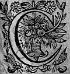

LE
QUATRIESME
LIVRE DE LA
SECONDE PARTIE
D'ASTREE.
Édition de 1610, p. 185.
Édition de Vaganay, p. 121.

C'ESTOIT la coustume des BergersBergeres η de Lignon de ne rencontrer jamais estranger, sans luy offrir toute sorte d'assistance, leur semblant que les loix de l'hospitalité le leur commandoient ainsi. Ceste coustume convia Astrée, Diane et toute leur compagnie, de faire ces mesmes offres à ces belles estrangeres, et apres leur demander la cause de leur voyage. A quoy Florice respondit pour toutes : qu'estant envoyées en cetteceste contrée, par l'ordonnance d'un Dieu qui leur avoit deffendu d'en dire encoresencore l'occasion, elles n'oseroient luy desobeïrdesobeyr , que cela estoit cause qu'elles ne pouvoient leur satisfaire : Et s'estant enquise qui estoient ces Bergeres, et ayant sceu de Philis leurs noms, Florice s'addressant à Astree :
- J'advoüe dit-elle, que j'ay esté aveugle de ne cognoistre pas que vous estiez la Bergere Astree de qui la beauté ne pouvant se renfermer en un si petit pays que les Forests η , remplit de sa loüange toutes les contrees d'alentour : mais vous devez, ce me semble, recevoir pour excuse, qu'admirant et vous et Diane, je demeurois comme esblouye et confuse de trop de lumiere : Et je commence de bien esperer de nostre voyage, puis que d'abordd'abbord nous avons faitfaict la plus heureuse rencontre que nous eussions peu desirer. Astree pleine de civilité, luy respondit avec les plus honnestes parolesparolles qu'il luy fut possible, et apres s'estre embrassees et baisees, Hylas les interrompant : - Et quoy ? Florice, dit-il, que vous semble de nos villagesvilages ? Vistes-vous jamais rien de si beau parmy les artifices de vos villes, et n'ay-je point eu raison de vous quitter toutes pour ces belles Bergeres, puis que la simplicitéη de mon humeur, et de mon esprit àa bien plus de sympathiesimpathie avec leur beauté naturelle, qu'avec les resη rusesruzes et finesses dont vous usez dans vos villes ? - Si jamais vous avez disposé vos actions, dictdit Florice, avec jugementjugemens , j'advouë que ç'a esté cestecette fois, non pas pour la conformité des humeurs qui peut estre entre ces belles Bergeres et vous, car en cela vous seriez trop differensdifferents , mais parce que Hylas ayant esté toute sa vie volage en l'affection qu'il a portee aux autres beautez, deviendra sans doute constant à ce coup, si pour le moins la perfection de la beauté a puissance de le faire : Et quant à moy je le crois, puis que ne voyant rien de
mieux en quelque autre lieu où il puisse
aller, s'il a de la raison il sera contrainctcontraint de
s'arrester icy. - C'est à moy à respondre, dict
Philis, car Hylas est mon serviteur : et
toutesfois je ne respondray pas de sa fidelité, puis que regardant vostre visage qu'il a aymé, et depuis
cessé d'aymeraimer , je tiens que ce n'est pas la beauté qui
le rend amoureux. - Et que pourroit-ce donc estre ?
interrompit Hylas. - Une imprudente humeur de
changer, respondit Florice, et une certaine legereté
d'esprit, qui ne le laisse jamais vingt-quatre heures
en mesme opinion. - Vous estes partieη
, repliqua Hylas, le jugement que vous en faictes, est suspect.
- Je vous asseure, respondit-elle, que si vous croyez
que je sois partie offencee, je vous remets
librement l'injure, puis que je suis beaucoup plus obligee à vostre changement que je n'eusse receu de
satisfaction de vostre constance. Et si vous me dites
partie pour pretendre quelque chose en vous, croyez, Hylas, que je quitte de bon cœur ma pretention à
qui la voudra, et qu'il m'obligera plus en la
recevant, que je ne penseray de luy avoir fait de
l'avantage, en luy faisant cette donationdonnationη
η
. - Vous avez
raison, respondit Hylas, à moitié en
coleré, de faire
de cestecette sorte vos presens de moy, car vous en pouvez
disposer aussi librement que des estoillesestoiles .
Cependant
Paris s'estoit addresséadressé à Diane, et apres
l'avoir salüee : - C'est bien, dit-il, la plus heureuse
rencontre que j'eusse peu desirer que celle de vous
avoir trouvee icy où je l'esperois le moins. - Elle
l'est pour moy, dit Diane, puis
qu'elle nous donne le bien de vostre compagnie, si ce n'est que ces belles estrangeres nous la ravissent. Elle sous-rit à ce mot, sçachant bien que Paris l'aymoit, de sorte qu'il n'avoit garde de la quitter pour quelque autre que ce fust. Que si ce sous-ris donna du contentement à Paris, il fit bien un contraire effect en Silvandre, qui n'ignorant point l'amour de Paris, ne se peut deffendre des pointes de la jalousie, en voyant le bon accueil qu'on faisoit à son rival, et cette experienceη eust eu plus de force à luy faire advoüer que la jalousie procedoit d'Amour que toutes les raisons qu'eusteut peu alleguer Philis contre luy. Et à la verité il n'y avoit rien qui peustpeut , ce luy sembloit, emporter quelque advantage sur l'ame altiere de Diane, que la grandeur du pere de Paris. La Bergere, qui avoit quelque inclination à ne point hayr Silvandre, y prit gardeprint, aussi fit bien Laonice, quoy que le Berger dissimulastdissimulat le mieux qu'il luy fustfut possible : mais les yeux d'amour et de la malice sont trop aigus pour ne percer tous les voilesvoyles qu'on leur veut opposer, Et la cognoissanceconnoissance qu'il leur en donnoit eust esté beaucoup plus grande, si Astree ne les eust separez : mais desirant avec passion dedes parachever son voyage, elle rompit bien-tost compagnie à ces estrangeres, et se remit en chemin. Et parce que Paris avoit pris soussoubs les bras Diane, Silvandre s'en alla vers Philis, qui le voyant venir : - Voila que c'est, luy dit-elle, nous sommes tous deux de surplus, et quand nous ne serions point icy l'on ne laisseroit pas de s'entretenir.
- A ce coup, dit Silvandre, j'advoüe, mon ennemye, que vous avez barrebarres sur moy, et que je n'ay rien à repliquer sur ce que vous dites : je plie patiemment les espaules, et paye de cestecette sorte le tribut de mon peu de merite sans murmurer. Lors qu'ilelle η luy vouloit respondre, Hylas survint, qui sans se soucier de ces estrangeres s'en courut apres Philis, laissant Palinice, Cyrcene et Florice, tout ainsi que s'il ne les eusteut jamais aymeesaimees . Diane qui admiroit cestecette humeur, ne peut s'empescher d'enη faire signe à Philis, qui de son costé le regardoit en pitié, et l'estimoit l'unique en son espece, et apres l'avoir consideré quelque temps de cestecette sorte : - Me direz-vous la verité, Hylas, luy dit-elle ? - En pouvez-vous faire doute, respondit-il, voyant combien je vous aymeaime , puis que pour vous suivre, je laisse toutes celles que j'ay aymeesaimees ? - CesteCette preuve continua Philis, n'est pas petite : mais je doute infiniment de ce que je vous veux demander. Dites moy donc, avez vous aymé ces estrangeres que vous venons de laisser ? - Vous le pouvez apprendre, respondit-il, par les parolesparolles de Florice. - Je ne fais pas, dit-elle, cesteceste demande sans raison : car si vous les avez aymeesaimees , comment les avez vous si tost laissees en ce lieu, où elles sont mesme estrangeres ? - Tout ainsi, respondit Hylas qu'autrefois j'en ay laissé d'autres pour elles, de mesme je les laisse maintenant pour vous, et je confesse bien que si l'amour que je vous porte n'eusteut eu plus de puissance sur moy que la civilité j'eusse esté en quelque sorte obligé à quelque assistance, mais je vous ayme tant que
je ne puis avoir autre
consideration que celle qui depend de mon amour.
- Je ne nie pas, dit Philis, que vous ne m'obligiez beaucoup : mais je vous admire en ce que les ayant
aymeesaimees , vous en faictesfaites
à ceste heureà cette heure si peu de conte.
- Je les ay aymeesaimees , respondit Hylas, mais je ne les
ayme plus, et par ce que l'amour me retenoit
autresfoisautrefois aupres d'elles, maintenant que ceste amour
est morte, elle ne le peut plus faire, et me semble
qu'en cela il n'y a pas grand sujectsubject d'admiration,
ou de mesme il faudroit s'estonner de voir un homme
libre, lors que la corde qui le souloit lier se seroit
usee et rompuë. - Je crois, interrompit Silvandre,
que Hylas n'a jamais aymé ces belles estrangeres :
car autrement il les aymeroitaimeroit encores, d'autant que
les liens d'amour ne se peuvent ny user ny
rompre. - S'ils ne peuvent estre usez ny rompus,
respondit Hylas, ils sont donc bien aisez à desnoüer.
- Tant s'en faut, repliqua Silvandre, tous les nœuds
d'amour sont Gordiens. - Si cela est, dictdit
Hylas j'ay donc la mesme espee de celuyη
qui jadis ne les
pouvant desnoüer, les couppacoupa ; car je sçay bien que je
me suis deffait de ceux de plusieurs.
- Neη
croyezcroiez point, adjousta Silvandre, que vous les ayez aymeesaimees : car vous les aymeriezaimeriez encores. - Je ne croy pas, dit
Hylas, ce que je sçay : c'est pourquoy, sçachant
tres-asseurément ce que je dis, pour vous faire plaisir
je ne le croirayη
pas, et vous pour ne m'importuner
davantage demeurez en vostre humeur
melancholique,
sans m'embroüiller davantaged'avantage le cerveau de vos
impertinentes opinions.
Philis qui estoit discrete, voyant que Hylas relevoit la voix avec colere, luy dit pour l'interrompre : - Encor faut-il, Hylas, que je me fasche contre vous, de ce que vous m'avez empeschéeempeché de sçavoir les nouvelles que ces estrangeres avoient commencé de raconter. - Ma maistresse, respondit il, j'aymerois mieux ne les avoir jamais aymeesaimees , que si elles estoient cause que vous eussiez quelque mauvaise satisfaction de moy. - Je sçay bien, respondit Philis, que l'Amour que vous leur avez portee, et la satisfaction dont vous parlez, ne vous pressent gueres, car puis que vous ne les aymez plus, que vous peut importer de les avoir, ou ne les avoir pas aymees ? - Et quoy, ma belle Maistresse, repliqua Hylas, vous n'estimez donc point les contentemenscontentements qui sont passez ? - Si mon bien ne continuë, dit Philis, le souvenir de ne l'avoir plus m'afflige, et ne m'en laisse rien que du regret. - De sorte, continua Hylas, que les services qu'on vous à faictsa faits , huict jours apres, sont mis à neant, voila qui ne va pas mal pour Hylas. Silvandre prenant la parole pour Philis : - Vostre Maistresse, luy dit-il, ne parle pas des services, mais des contentemens receus : et avant que de vous en plaindre, il faut sçavoir d'elle, si vos services sont mis en ce rang. Hylas respondit : - Ceux qui se deffientdefient de leurs merites, peuvent entrer en cette doute comme vous, mais non pas moy. Silvandre, qui sçaitsçay que toute amour ne se peut payer que par amour, et que celle à qui j'ay addresséadressé la mienne a trop d'esprit pour ne
la recognoistre, et trop de jugement
pour ne l'estimer. Le Berger vouloit respondre lors que Philis reprit
la parole : - J'estime Hylas, dit elle, comme je dois,
et je recognois ses merites pour estre tres-dignes
d'estre aymez, et ne faut pas qu'il pense que je
perde la memoire de ses services ; car continuant de
m'aymer, ils seront tousjours comme presenspresents . Et si
cette declaration luy est agreable, je luy veux faire
une requeste, qu'il me doit accorder, s'il ne veut
que j'aye opinion qu'il ne m'ayme pas bien.
- Commandez-moy, dit Hylas, tout ce qu'il vous
plaira, hors-mis deux choses, à sçavoir que je meure,
ou que je me departe de l'affection que je vous
porte : car si j'estois mort, je ne vous pourrois
plus aymer, et si je ne vous aymois plus, je perdrois
le plaisir que j'ay d'estre aymé de vous : - Et vous,
et l'Amour que vous me portez, respondit Philis
en sousriant, serez immortels, si vous ne mourez
que par ma volonté : mais ce que je desire, c'est
d'entendre de vostre bouche ce que vous nous avez
empesché d'apprendre de celle de Florice. Diane qui ouyt ceste demande, et qui s'ennuyoit fort de la
grande chaleur qu'il faisoit, dit : - Je trouve que si
nous rencontrions quelque lieu commode pour passer
cetteceste grande ardeur du Soleil, il y auroit bien du
plaisir de donner une heure d'audience à Hylas :
car je m'asseure que son discours ne sera point
ennuyeux.
Astree qui, encore que fort desireuse d'achever son
voyage, cogneut bien qu'elle disoit vray, pour ne
contrarier seule à la volonté, et à la commodité
de toustoutes les autres, s'approcha
d'elle, et dit qu'elle vouloit estre de la partie. - De sorte, adjousta Hylas, qu'il ne tiendra qu'à moy que vous ne m'escoutiez. Et à la verité je serois de mauvaise compagnie, si en me plaisant moy mesme, je n'estois bien aise de vous contenter : car ne croyez pas que ce ne me soit presque autant de plaisir de repenser à mes premieres amoursη que si j'estois encores amoureux, et que les mesmes choses fussent presentes, parce que la plus part des plaisirs d'Amour sont plus en l'imagination qu'en la chose mesme : Et quand on raconte ce qui s'est passé, l'ame jette sa veuë sur les images qui luy en sont restees en la fantaisie, et les voit alors comme si elles estoient presentes. Et par ainsi pour le contentement de toute cestecette compagnie, il ne faut que trouver un lieu commode où l'ombre nous deffende des rays du Soleil. - Il seroit impossible, respondit Silvandre, qu'en tout le bois on peustpeut rencontrer une place plus commode que celle de la source de ce petit ruisseau que vous voyez : car la frescheurfraischeur de l'ombre et le doux murmure de l'eau qui coule parmy le gravier, convieη chacun àa s'y arrester : et ce qui est de meilleur, c'est que nous ne nous destournionsdestournons point de nostre chemin. A ce mot, se mettant devant au grand pas, toute la trouppetroupe le suivit, bien ayse d'eviter l'incommodité du chaud. D'abord chacun mit les mains dans la fontaine, et n'y eut celuy qui n'en pristprit dans la bouche pour se rafraischir, et puis choisissant les places les plus commodes, ils s'assirent tous à l'entour de ceste belle source, horsmis
Silvandre, qui estant monté sur un grand cerisierη , qui mesme leur faisoit une partie de l' ombrage, leur jettoit en bas des branches chargees de fruicts : Et apres en avoir choisi quelques unes des plus belles, les vint presenter à Diane, qui en donna à Paris et aux Bergeres, non toutesfois sans en choisir une qu'elle donna à Silvandre, en luy disant : - Tenez Silvandre, c'est ainsi que je vous fais part de mesvos biens. - Pleust à Dieu, dit-il en la recevant et luy baisant la main qu'elle luy tendoit, que vous receussiez d'aussi bon cœur tout ce que je vous donne, que cette part que vous me faittesfaites m'est agreable. Et prenant place le mieux qu'il peut aupres d'elle, lors que les cerises furent parachevees, Hylas commença de parler de cette sorte.
HISTOIRE
DE PARTHENOPE, FLORICE
ET DORINDE.

JE me suis moqué bien souvent en ma pensee de ceux
qui blasment l'inconstance, et qui font profession d'en
estre plus
ennemis, considerant qu'ils ne peuvent estre tels qu'ils
se disent, qu'ils ne soient eux-mesmes plus
inconstans que ceux qu'ils accusent de ce vice. Car
lors qu'ils deviennent amoureux, n'est-ce pas de la
beauté, ou de quelque
chose qu'ils remarquent en la
personne qui leur est agreable ? Or si cetteceste beauté
vient à deffaillirdefaillir, comme c'est sans doute que le
temps emporte cet avantagecest advantage sur toutes les belles, ne
sont-ils pas inconstans d'aymer ces laids visages, et
qui ne retiennent rien de ce qu'ils souloient estre,
sinon le seul nom de visage ? Si aymer le contraire
de ce que l'on a aymé est inconstance, et si la
laideur est le contraire de la beauté, il n'y a point
de doute que celuy conclut fort bien, qui soustient celuy estre inconstant, qui ayant aymé un beau
visage, continuë de l'aymer quand il est laid. Cette
consideration m'a fait croire, que pour n'estre
inconstant, il faut aymer tousjours et en tous lieux
la beauté, et que lors qu'elle se separe de quelque
subjet on s'en doit de mesme separer d'amitié, de
peur de n'aymer le contraire de cetteceste beauté. Je sçay
bien que la vulgaire
opinion tient tout le contraire :
mais il me suffit pour responce, de dire que le
peuple est ignorant, et qu'en cecy il en rend une
veritable preuve. Ne trouvez donc estrange, ma
Maistresse, ny vous, gentil
Paris : si vous
racontant ma vie vous oyez plusieurs semblables
changemenschangements : car je suis si soigneux de ne
contrevenir à cestecette constance, que j'ay mieux aymé
de quitter toutes celles que j'ay aymees jusques icy
que de faillir envers elleη
.
Vous avez desja sçeu le subjectsubjetη
η
qui me sortit de
Camargues, quel fut mon voyage jusques à Lyon,
pourquoy j'aymayaimay
Palinice et Cyrcene, et lors que
j'ay interrompu Florice, elle vouloit raconter
comment elle me surprit ; mais parce qu'elle a oublié
des choses qu'il est necessaire
que vous sçachiez,
je reprendray ce qu'elle a teu finement, et puis je
continueray de vous dire le reste de ma vie pourveu
que nous ayons assez de temps.
Sçachez donc ma Maistresse, que Clorian à la verité,
fut tres-mal avisé de me donner charge de parler à
Cyrcéne pour luy, puisque ce n'est pas estre bien
conseillé de choisir en cela un amy qui soit plus
honneste
hommeη
que celuy qui l'envoye, y ayant trop
de danger, voire estant presque inevitable, que ce
mal-adviseavisé ne demeure Amant, et que l'autre ne demeure
aymé, parce que si celle à qui l'on s'addresseadresse a de
l'esprit, elle recevra tousjours plustost ce qui vaut
le mieux : et puis c'est prendre un mauvais lustreη
que de se servir et accompagner d'un plus honneste hommeη
que
l'on n'est pas. Il est certain que quand j'allay
avec Palinice trouver Circene pour Clorian, mon
dessein estoit de le servir en amy, et de rapporter
tout ce qui me seroit possible à son contentement ; mais aussi-tost que je vis cestecette fille, je me
ressouvins que j'en estois amoureux depuis que je
l'avois veuë la nuitnuict dans le Temple :
de sorte que je vis bien qu'il falloitfaloit que je
contrevinse ou à l'amitié ou à l'Amourη
, et apres
que j'eueus longuement debatu, et pour l'un et pour
l'autre, à sçavoir à qui cederoit : En fin je conclus
qu'il falloitfaloit que le nouveau venu quittast la place
à l'aütre : mais je n'eusneus pas plustost fait cestecette resolution, que l'Amour incontinent me representa
qu'il estoit n'aycette
η
en mon ame, aussi-tost presque
que j'estois cette n'ayη
, et que l'affection que je portois
à Cyrcene
avoit devancé celle que j'avois depuis euë pour Palinice, qui estoit cause de l'amitié de Clorian ; et par ainsi l'amitié estant venuë long temps apres l'Amour, fus-je injuste d'ordonner qu'elle cederoit ? Nullement ce me semble, puis que nous voyons que les Loix appreuvent ceste primogenitureη des peres envers lesleurs enfans, et qu'il semble mesme que la nature le vueille ainsi. VoilaVoyla donc la raison qui me fit parler â Circene de la sorte que Florice vous a dit, et jugez si je pouvois avoir outre cela plus d'obligation au contentement de quelqu'quelque autre, qu'au mien propre. Qu'elle ne m'aille donc point reprochant que je ay trahy mon amy : car si de deux maux il faut tousjours choisir le moindre ; et si l'homicide de soy-mesme est plus grand que de quelqu'autre que ce soit, qui dira s'il n'est hors du sens, que je n'aye bien fait de trahir plustost une amitié qu'un Amour, et d'avoir plus d'esgard à la conservation de ma vie et de mon contentement, qu'à celle de Clorian ? Clorian m'ayme, et j'ayme Circene. Clorian me prie de parler pour luy à Cyrcéne : et mon affection me faitfaict la mesme requeste pour moy. Si je ne satisfais à Clorian, j'offence l'amitié que je luy porte ; si je ne satisfais à mon affection, j'offence Circene, et Hylas. J'ayme Clorian, j'ayme aussi Hylas, et par là vous voyez que ces deux amitiez pour le moins se contrepesent : car j'ayme bien autant Hylas que Clorian, voire eust-il avec luy tout le reste du monde, mais l'Amour que je porte à Circene, se joignant à l'amitié que je me porte,
appesantitapesantit de
sorte ce costé de la balance, que je ne tournay
pas seulement les yeux sur Clorian, pour voir quel
estoit son poix. Je me laissay donc emporter à ce que je me devois, et
pour vous monstrermontrer que j'avois raison, les Dieux
approuverent mon
dessein, le favorisant tellement que Circene apres
avoir esté recherchee de moy quelque temps, m'aymaaima en fin peut estre autant que je l'aymoisaimois : et quand
vous sçauriez les asseurances que j'en ay receuës, je
veux croire que vous en diriez autant que moy. Mais
parce qu'elle avoit des personnes ?η
à qui elle devoit
donner de la satisfaction, et particulierement à sa
Mere, elle me pria de trouver bon qu'elle feignist
d'aymerfeignit d'aimer
Clorian, parce qu'il y avoit apparence de
mariage entre eux, estant d'une mesme ville, et d'une
mesme condition ; et de plus, Clorian estant fort
riche, sa mere sans doute auroit ceste recherche
agreable, au lieu que si la mienne eust esté
descouvertedescouvert parce que j'estois estrangerη
, et qu'on ne
sçavoit pas mesmes si je n'estois point marié, elle
l'eust desapprouveedesapreuvee , et luy eust peut-estre deffendu
de me voir.
Jeη
fus tres ayseaise qu'elle m'eust fait cestecette
ouverture,
d'autant que je ne sçavois plus avec quelles paroles
je devois entretenir Clorian plus longuement, luy
ayant desja dit toutes les excuses que je pouvois, parce
que luy qui me voyoit d'ordinaire pres de Circene,
feignant que c'estoit pour parler pour luy, il
commençoit d'entrer en doute de moy, voyant que je ne
faisois rien à son avantageadvantage . Je fis
donc entendre à
Cyrcene tout ce qui s'c' estoit passé entre Clorian, et
moy, et la charge qu'il m'avoit donnee de luy en
parler. Mais ma belle maistresse, je le luylaη
η
dis en me
moquant de luy, et le mesprisant bien fort, de peur
que si je luy eusse representé son affection telle que
je l'eusse bien sçeu faire, elle n'eust pris quelque
envie de l'aymer : Et je le fis si dextrement, que
Circéne
euteust plus de volonté encores de se servir de
luy pour m'aymer avec moins de soubçonsoupçon , et me dit, que
la raison qui luy en avoit fait faire chois, estoit
que sa mere le luy avoit bien souvent proposé pour
mary, et qu'elle avoit bien recogneu qu'il ne luy
vouloit point de mal. Je me retire donc en ceste
intention vers Clorian, à qui je feintsfaints un long
discours pour luy faire trouver meilleur ce que je luy
voulois dire : Je luy raconte des paroles, des
responces, et des repliques merveilleuses que je disois
avoir faictesfaites à son advantage, et dont il n'avoit pas
esté dit un mot : et en fin je l'asseure que la
declaration qu'il luy fera de son affection luy sera
agreable. Les remerciemens qu'il me fit furent grands,
et plus encor les offres de me servir en semblable
occasion, dont je le remerciois de bon cœur, ne
desirant pas d'estre entre ses mains, comme je le
tenois entre les miennes.
Enfinη
il se resout de parler à Circene, selon
mon advis, et se
prepara à cestecette rencontre, avec autant de crainte, et de
battementbatement de cœur, que s'il eust deudù entrer en champcamp clos contre le plus vaillant Champion
de tous les
Francs. Si est-ce que le courage que je luy
donnois,
et l'asseurance que ses paroles seroient bien receuës,
luy firent en fin surmonter la crainte qui l'en avoit
si long temps empesché : Et trouvant la commodité de
luy parler il luy dit son intention, avec les
meilleures paroles qu'il peut inventer, desquelles
la conclusion fut qu'il luy portoit tant de respect,
que sans moy il n'eust jamais eu la hardiesse de luy
declarer son affection, encor qu'elle fust si juste,
et si pleine d'honnesteté, ne tendant qu'à l'espouser,
qu'il penseroit bien qu'autre qu'elle ne s'en
sçauroit offencer. - A la verité, luy respondit-elle,
vous avez un fort bon amy en Hylas, et vous le devez
croire tel, et le conserver par tous les moyens qui
vous seront possibles, y ayant plus d'un mois que
continuellement il me parle de vous, vous entendrez
par luy que je ne suis pas si mescognoissantemécognoissante que vous
m'estimez, et que je sçay bien qu'une personne de
vostre merite, oblige une fille quand il la recherche
avec le dessein que vostre amy m'a asseuré que vous
avez. Cela estant, vous devez croire que je vivray
avec vous, comme le requiert une si honneste
affection : mais je seray tres-ayse que Hylas soit
tesmoing de tout ce qui se passera entre nous, à finafin qu'il condamne celuy qui aura le tort.
J'abregeray ce discours, ma belle Philis, parce que
si je me voulois autant arrester en tous les autres,
il faudroit un siecleη
pour vous redirereduire
les accidens qui me sont arrivez.
Sçachezη
donc que depuis ce jour, voilavoyla
Clorian
tellement embarqué, qu'il n'y avoit
point de moyen de l'en retirer : Et parce que les parens commencerent de s'en prendre garde, il falut que je fisse entendre à la mere, que Clorian avoit dessein de l'espouser, et que d'autant que j'avois jugé ce party n'estre point desavantageuxdesadvantageux pour Cyrcéne, j'y avois apporté tout ce qui m'avoit esté possible : mais que n'en ayant point parlé à son pere, et à sa mere, il desiroit que cette declaration fust secrette. La mere de Circéne qui sçavoit que Clorian estoit riche, et bien apparenté, me remercia de ce bon office : et en fin me pria que s'il avoit cette volonté, il luy en dist quelque chose, et qu'elle le tiendroit si secret qu'il luy plairoit, mais qu'elle desiroit avoir cette satisfaction de luy ; Je l'asseuray qu'il n'y manqueroit point : et d' effecteffet quelques jours apres nous l'alasmes trouver en son logis, où Clorian luy en dist encore plus que je n'avois faictfait . VoylaVoila donc toutes choses en bon estat : car pour moy j'estois bien venu aupres de la mere, tres-bien aupres de Clorian, mais mieux encoreencores aupres de Circéne. Or voyez à quoy je fus reduit pour faire semblant que je n'estois point amoureux de cetteceste belle fille, j'estois contrainct de quitter la place à Clorian, et de parler pour luy : s'il y avoit quelque compagnie, je me mettroismettois devant eux, à fin que sans estre veu Clorian luy baisast les mains, mais je mourois quand je voyois que quelquefois il luy baisoit la bouche, et toutesfois cela est bien souvent advenuavenu en ma presence. Et quoy qu'il me desplustdéplust beaucoup, et plus encores à Circéne,
si nous y contraignionscontreignons nous
pour avoir sujetsubject de vivre privément elle et moy.
Car la mere qui croioitcroyoit que je n'y
fusseη
que pour Clorian, m'en donnoit toutes les commoditez que je
voulois. Voire je diray bien d'avantage, je luy
portois les lettres que Clorian luy escrivoit, et le
plus souvent je faisois la responce, et elle ne
faisoit que la rescrire, et Dieu sçait si c'estoit sans
rire, et sans bien passer nostre temps à ses despens.
Je vivois donc de ceste sorte, le plus content homme
du monde, lors que la fortune voulut tourner la rouë
tout à rebours : toutesfois je n'en eus pas tant de
mal qu'un autre eust bien peu recevoir, ayant une
tres-bonne recepterecette
à toutes ces maladies. Les festes
des Bacchanales estoient presque parachevées, lors que Clorian, et moy nous resolumes de
maintenir un
tournoy. Clorian fit peindrepaindre pour sa devise une Cyrcé, avec le visage de Cyrcéne, qui transformoit
par ses breuvages les compagnons d'Ulysse en diverses
sortes d'animaux, avec ce mot, L'AUTRE AVOIT MOINS DE CHARMES. Quant à moy, n'osant me declarer comme
luy, je voulus un peu desguiserdéguiser son nom, et peignis
une Syrène et Ulysse lié dans son vaisseau, avec ce
mot. QUELS LIENS FAUDROIT-IL.
Je pensois avoir
bien travaillé, et qu'elle m'en seroit infiniment
obligée, et voyez ce qui en advintavint .
Il y avoit de fortune une belle fille dans Lyon, qui
se nommoit Parthenopé, assez voisine du logis où
je demeurois, avec laquelle toutesfois
je n'avois jamais
eu grande familiarité, et si n'en sçaurois dire la
cause : car ce n'estoit pas mon humeur d'avoir de
belles voisines sans les visiter : quand je fus sur
les rancs, et que chacun eust dit son advis de nostre
entrée dans le champ, les plus curieux voulurent
deviner nos devises.
Quantη
à celle de Clorian, il n'y
eust celuy qui ne la devinast aysément, le visage de
Cyrcéne et l'équivoque du nom la descouvrantdecouvrant assez.
Mais pour la mienne,
il n'y avoit personne qui en peust venir à bout. En fin un vieil Chevalier qui estoit parmy les Dames
sur l' eschaffauteschefaut où estoitη
Cyrcéne, et Parthenopé,
et que l'aage dispensoitdispansoit de vestir le harnois,
respondit froidement, - Il est aysé de descouvrir
son intention, Et lors s'addressantadressant à Parthenopé :
- C'est pour vous, la belleη
, luy dit-il, qu'il entre
au champcamp. Elle rougit, car elle se sentoit accusée
à tort, et luy respondit comme surprise : - Si c'est
pour moy, il est vrayementvrayment bien secret et dissimulé,
puis qu'il ne m'en a rien dit. - Prenez garde,
respondit Cyrcéne, qui se sentoit picquée, que vous
ne le soyez plus que luy, en le voulant dissimuler
mieux qu'il n'a sceu faire. - Il m'est aysé,
respondit Parthenopé, de dissimuler une chose que je
ne sçay pas, ny celuy non plus qui l'a ditte, sinon
par opinion. - Si vous voulez sçavoir, respondit le
vieil Chevalier, qui me l'a fait faict juger ainsi, je le
vous diray, et je m'asseure que vous ferez un jugement
semblable au mien. - Je seray bien aise, respondit-elle,
d'apprendre ce secret de vous : - Vous voyez, reprit
alors le
vieil Chevalier, qu'il porte une Sirene en
son escu, avec ce mot, Quels liens faudroit-il. Il ne pouvoit vous nommer plus clairement que par la
peinturepainture d'une Sirene, parce que les anciens ont tenu
que les Sirenes estoient trois filles d'Achelois, et
de la Nymphe
η
Calliope, et se nommoient Ligée, Leucosie, et Parthenopé ; et vous vous appellant
Parthenopé, il estoit bien malaysémalaisé qu'il peust vous
faire voir plus clairement son intention que par une
Sirene, et un Ulysse lié à l'arbre de son vaisseau,
voulant entendre qu'il n'y a rien qui le peust
empescher de se donner à vous, si par vos faveurs vous
le vouliez rendrerandre vostre. Alors toute la trouppe frappant des mains, s'escria :
- Ah Parthenopé ! vous nous l'avez bien tenu secret,
mais il vaut autant l'advoüeravouer maintenant que de le
nier. - Quant à moy, dit-elle, ce m'est tout un, et
que cela soit, ou non, il m'importe fort peu. - Vous
ne vous fascherez donc point, ditdict
Cyrcéne, que nous
le nommions vostre Chevalier ? - Je ne m'en soucie
point, dit-elle, mais prenez garde que vous ne
l'accusiez à faux. Ce bruit courut incontinent parmy
les Dames, que j'estois le Chevalier de la Sirene,
et Clorian de Cyrcéne, et qu'on verroit laquelle
auroit meilleure fortune en ce tournoy. Quant à moy
je n'en sçavois rien, et prenois bien garde que quand
je passois sous l'eschaffauteschafaut de Cyrcéne, elle me
crioit : - à Dieu, Chevalier de Parthenopé, mais je ne
sçavois ce qu'elle vouloit dire.
Enfinη
le tournoy parachevé, chacun se retira,
et nous
semblant d'avoir bien faict nostre devoir Clorian et moy, aussi-tost que nous fusmes desarmez, et que
nous eusmes changé d'habit, nous allasmesalasmes chez
Cyrcéne : mais elle qui estoit infiniment picquée
contre moy, ne me fit pas l'accueil qu'elle souloit ;
au contraire quand je luy voulois parler, elle ne me
disoit autre chose, sinon : - Laissez moy en paix,
Chevalier de la Sirene, et, se tournant de l'autre
costé, avec une façon de mespris, ne me respondoit
qu'avec peine.
J'estoisη
tant innocent de ce qu'elle m'accusoit, que
je n'y songeois point, et ne sçavois pourquoy elle me
traittoit de cette sorte, si ce n'est que je ne me
fusse pas bien acquittéacquité à son gré de l'entreprise
que nous avions faictefaite , d'estre les soustenans en ce
tournoy.
Maisη
ne me semblant pas que j'eusse plus
mal faictfait que mon compagnon, et voyant qu'elle luy
faisoit bonne chere, je ne sçavois qu'en penser. Je
me retire ce soir sans en sçavoir autre chose : car
je ne peupeus tant faire que de parler à elle en
particulier : je m'en vay doncquesdonques un peu mal
satisfait de ma fortune : mais le lendemain il m'advintavint une rencontre qui ruïna tout le reste de mes affaires. Estant le matin dans le Temple, j'y rencontray
Parthenopé, avec une de ses tantes : et de fortune
m'estant mis aupres d'elle, je vis qu'elle me regarda
d'un œil qui n'estoit point ennemy. Elle estoit
belle, et par consequent de celles que par les loix
de ma constance, je suis obligé d'aymer. Cela fut
cause que je m'approchay un peu plus près d'elle : et
lors
que je cherchois un subjetsubject pour parler, elle s'approchaaprocha et se pancha un peu de mon costé, et me dit : - Comment vous trouvez-vous du tournoy ? - Je dois faire cette demande, luy dis-je, aux belles Dames comme vous estes, puis que le jugement vous en demeure. - Je ne vous demande pas, me dit-elle, comment vous vous y estes porté : car chacun est tesmointesmoing qu'il ne se pouvoit mieux, mais je suis curieuse de sçavoir si vous ne vous estes point trouvé las de la peine que vous y eustes. - Puis que vous faictesfaites , luy repliquay-je, un jugement si advantageuxavantageux pour moy ; seroit-il possible que j'en puissepusse ressentir quelque peine ? Nous estions en lieu où les longs discours n'estoient pas bien seants : cela fut cause qu'elle ne me respondit qu'avec un sousris, et en baissant la teste de mon costé. Or les prieres et devotions estant finies, elles sortent hors du Temple, et moy me semblant que ces dernieres paroles m'obligeoient à les accompagner jusques en leur logis, qui estoit fort proche de ce Temple, je pris sous le bras Parthenopé, et par les chemins je sceus l'opinion que chacun avoit euë, que je fusse entré au tournoy comme son chevalier. Quant à moy qui estois bien aise de couvrir l'affection que je portois à Cyrcéne, et qui outre cela n'eusse jamais refusé les bonnes graces de Parthenopé, luy respondis qu'il estoit vray, et que n'ayant osé le luy declarer par mes paroles, j'avois choisi cette voye. Apres plusieurs discours, et que nous fusmes arrivez en son logis, elle osta son escharpe qui luy couvroit la teste, et la mit sur la table,
et puis osta son masque, et tournant le dos au feu, se chauffoitchaufoit en me parlant, et je cognoissois bien qu'elle n'avoit point eu desagreable ce qui s'c' estoit passé, puis qu'elle en renouvelloit tousjours le discours ; et plus je voyois que mon service ne luy desplaisoit point, et plus j'en devenois amoureux. En fin avant que partir je pris cette escharpe qu'elle avoit posée sur la table, et me la mis au col, encor qu'elle y fist un peu de resistenceresistance ; mais je luy dis qu'estant entré le jour precedent au tournoy pour elle sans avoir autre marque d'elle que mon affection, il estoit bien raisonnable que j'eusse celle-cy pour tesmoignage que j'estois sien. La difficulté qu'elle en fit ne futfust pas grande, et par ainsi je l'emportay, et l'eus tout le reste du jour au col. Toutesfois parce que je ne voulois perdre Cyrcéne, je me contraigniscontreignis de n'aller point en lieu où elle me peust voir ; mais celuy de qui je me doutay le moins, qui estoit Clorian, luy dit sans autre dessein que de luy raconter de mes nouvelles, que j'estois le plus content qui fut jamais pour les faveurs que je recevois de Parthenopé ; et là dessus luy parla de cetteceste escharpe. Dieu sçait si cesses paroles luy toucherent au cœur ; car veritablement elle m'aymoitaimoit , et toutesfois elle n'en fitfist point de semblant. Mais lors que j'y allay le lendemain, sans que Clorian y fust : - Et bien me dit-elle, Chevalier de la Sirene, qu'avez-vous faictfait de vostre belle escharpe ? J'aymois Cyrcéne beaucoup plus que Parthenopé : et ne voulois point la perdre pour si peu d'occasion : cela fut cause qu'avec mille
sermenssermants , je luy juray
qu'entrant au tournoy, je n'avois point pensé à
Parthenopé, mais au nom de SireneCyrcéne
η
seulement : auquel adjoustantduquel ostant une lettre on pouvoit faire CyrcéneSyrene.
- Mais, dit-elle, pourquoy ne m'en parlastes-vous point ?
- Parce, luy respondis-je, que je croyois la chose
si aisée que
je pensois que vous la recognoistriez. - Et de cetteceste escharpe, adjoustat' -elle, qu'en dirons-nous ?
- J'advouëavouë luy dis-je, que je la luy pris hier, mais
ce ne fut que par manière d'acquit, et comme desireux
de mieux celer l'affection que je vous porte.
Elleη
demeura quelque temps sans me respondre, et puis elle
reprit tout à coup la parole de cetteceste sorte : - Or bien
Hylas, j'en croiray tout ce que vous voudrez, pourveu
que vous me contentiez en une chose. - Elle sera
impossible, luy dis-je, si je ne la fais. - Donnez-moy, me repliqua-t'elle, l'escharpe dont je vous
parle, et je vous en donneray en eschange une autre
qui vaudra mieux. Je fus en peine, et eusse bien voulu
m'en excuser : mais il me fut impossible,
et oyez je vous supplie, quelle fut sa resolution.
Aussi-tost qu'elle l'euteust elle se la mit au bras,
et m'en donna une autre, qui sans mentir estoit
beaucoup plus belle, et le jour mesme sçachant que je
n'estois point en mon logis, elle s'en va avec
quelques unes de ses amies, feignant de se promener,
et passant devant ma porte, faictfait demander si j'estois
au logis. Un homme qui me servoit, et qu'elle
cognoissoit bien, vient parler à elle, et luy dit que
je n'y estois pas. - Nous voulions, luy dit-elle, cetteceste bonne compagnie
et moy, qu'il vint au promenoir avec nous : mais fais-nous un plaisir, va t'en dire
à Parthenopé que nous l'attendons icy pour cestcet
effect : et afin que tu y ailles de meilleur courage,
voilavoya une escharpe que je te donne, et porte làla tout
aujourd'huy pour l'amour de moy. Et à ce mot elle
luy mit au col celle que j'avois euë de Parthenopé.
Ce valet qui se sentoitsentit fort honoré de cette faveur,
l'en remercia ; et pour luy obeïr, s'en alla courant
faire son message à cette fille qui voyant d'abord son escharpe au col de cet homme, euteust
opinion que je
la luy faisois porter par mespris d'elle : et depuis,
oyant la harangue, cogneut bien que cela venoit de Cyrcéne, et que je la luy avois donnée : ce qui
l'offensa de sorte que jamais depuis je ne peus
renoüer avec elle, et moins encore avec Cyrcéne,
qui se retira tout à faictfait de moy, quoy qu'elle vist
bien que je l'aymois d'avantage : mais practiquant cettetenant ceste
maxime, qu'il faut haïrhayr ceux que l'on a offensezoffencez
η
,
sçachant que la trahison qu'elle m'avoit faictefaite estoit
tres-grande, elle ne voulut jamais se fier en moy.
Je fus contraint de retourner à Palinice, mais je
n'y demeuray pas long-temps : car le printemps estant
desja assez advancé, et de fortune s'estant trouvé
cette année fort beau, un jour ces
belles Dames, se mettant ensemble plusieurs de
compagnie, voulurent jouïir de la douceur des champs : Et pour y aller plus à leur commodité, entrerent dans
un batteaubateau , et remontant contremont le paisible Arar,
passoient le temps tantost à la musique des instrumens,
tantost
à celle des voix, et quelquefois mettant pied à terre, dansoient à des chansons qu'elles disoient tour à tour. De malheur, je n'avois autre cognoissance en cetteceste trouppe que celle de Palinice, et Cyrcéne : toutesfois je ne laissay de me mettre parmy elles, et de les entretenir toutes. Je voyois bien qu'elles se demandoient à l'aureille qui j'estois, et que Palinice avoit assez d'affaire à dire mon nom à toutes celles qui s'en enqueroient : mais cela ayant duré quelque temps, je fus incontinent apres aussi cogneu que personne de la trouppe, parce qu'entrant en discours avec la premiere qui se presentoit, elles trouverent mon humeur si agreable qu'il n'y en euteust une seule qui ne voulustvoulut estre de mes amies. Tant que le bateau alla contremont, encor que l'Arar coule si doucement, que bien souvent on ne peut remarquer de quel costé il descend, si est-ce que quelquesfoisquelquefois il faisoit un peu de bruitbruict contre les aix, et cela fut cause qu'on ne se servit que des instrumensinstruments : sinon qu'interrompant quelquesfoisquelquefois la musique, elles discouroient bien souvent aux despens de ceux qui n'en pouvoient mes. Mais quand on se laissa aller au courant de l'eau, et qu'on n'oyoit plus qu'un petit gazoüillis que l'onde faisoit contre le batteaubateau , comme glorieuse de porter une si belle charge, elles s'assirent dans le fond, et là celles qui avoient la voix bonne, chantoient ce qui leur venoit en fantaisie. Entre ces belles Dames il y avoit plusieurs Chevaliers et enfans des Druides qui s'estoient mis parmy elles pour leur tenir compagnie, et passer le soir
plus agreablement. Ce fut en ce lieu où la premiere fois je vis Teombre. Cest homme avoit presque passé son Automne avec une si bonne opinion de luy mesme, qu'il pensoit que toutes les Dames mourussent d'amour pour luy. Quant à moy je ne peupùs jamais y remarquer chose qui me pleustpleut : toutesfois il est certain qu'il avoit des mignardises qui ne desplaisoient point à quelques unes. Entre les autres Florice à ce que je crois l'avoit aymé : cette Florice à la verité estoit belleη , et pouvoit conserver ce nom entre celles qui sont estimées belles. Elle estoit blanche et blonde, avoit tous les traicts de visage tres-beaux, mais sur tout les yeux si doux et attrayansattrayants , que j'advoüe n'en avoir jamais veu de semblables. Elle avoit la taille si belle et la façon si pleine de Majesté, qu'on pouvoit aisémentaysement juger qu'elle n'estoit pas née parmy le peuple : aussi estoit-elle de cette race qui se vante d'estreissuëyssuë du grand Arioviste. Et quoy que cetteceste belle Dame fustfut telle, qu'il n'y eust point en toute la contrée, qui peut estre ne luy deustdeut ceder, et en merite, et en beauté : si est-ce que Teombre, fust pour le mal-heur d'elle ou autrement, en estoit plus ayméaimé qu'autre qui fustfut dans la ville. Et parce qu'il y avoit desja quelque temps que cetteceste amitié estoit commencée, et que la continuation en est quelquefois languissante, Teombre creut qu'il la falloit rallumerfaloit ralumer par quelque jalousie, et pour ce sujet fit semblant d'aymeraimer une jeune fille nommée Dorinde, qui avoit bien quelque beauté, mais qui cedoit en tout à Florice. Or ceste Dorinde
pour lors estoit partie pour aller chez un de ses oncles, et y avoit quelques jours qu'elle estoit hors de la ville : cela fut cause que Teombre pour continuer sa feinte, quand ce fut à luy à chanter, prit son sujectsubjet sur cetteceste Dorinde, et en dit quelques vers dont je ne me sçaurois souvenir. Mais en fin le sujetsubjet estoit qu'à son departdespart , elle avoit faictfait serment d'avoir tousjours memoire de luy : ce qu'il tenoit pour un si grand-heur qu'il n'y avoit Dieu dans le Ciel, avec lequel il voulustvoulut changer sa fortune. La belle Florice se sentit infiniment picquée de ces propos, qui dits en sa presence, sembloyent l'offensersembloient l'offencer d'avantage : et prenant la parole comme si c'eust esté en deffense de Dorinde, qui en quelque façon luy touchoit d'alliancealiance , elle luy respondit de cetteceste sorte.

DDorinde se mocquaceste de vous,
Quand elle vous tint ce langage,
Sçachant bien qu'on peut sans outrage,
Promettre toute chose aux fous.
Ou la vanité de vostre ame,
Vous faictfait vanter qu'elle l'a dit,
Pour monstrer d'avoir du credit,
Aupres d'une si belle Dame.
Mais soit qu'elle ait faictfait ce serment
Pour chasser un fascheux Amant,
Promettre est un doux artifice.
Et quand on l'en devroit punir,
Elle aymeroit mieux le supplice,
Que non pas un tel souvenir.
CetteCeste repartie faictefaite si à propos par Florice me fut
tant agreable, que déslors je me resolus de l'aymer,
et la joindre à Palinice et à Cyrcéne, et presque
en mesme temps costoyant un beau pré, elles furent
toutes d'advisavis de mettre pied à terre, pour joüyrjoüir de
la beauté du lieu, quelques-unes soudain commencerent
de chanter, d'autres de danser à leurs chansons,
et d'autres de cueillir des fleurs ou de se promener.
η
Florice fut de celles qui espanchées par le pré faisoient des boucquetsbouquets et des guirlandes. Elle estoit
alors assise sur ses talons, et separée de la trouppe,
s'entretenoitη
,
peut-estre de ce que Teombre venoit
de dire. Je m'approchay d'elle, non pas pour m'y
embarquer du tout, mais ayantaiant deux desseins, l'un
de sonder s'il y feroit bon, et selon que je
trouverois le passage de passer plus outre, ou de
m'en retirer : et l'autre pensant que Cyrcéne touchée de cette jalousie, ne voudroit pas me perdre,
et viendroitreviendroit
peut estre à quelque repentir. Mais il
advintavint autrement, comme vous entendrez. Mettant donc
un genoüil en terre pour luy parler
plus aysémentaisement , je faisois semblant de luy ayder à cueillir lesdes fleurs. Elle les prenoit de ma main avec beaucoup de civilité, non toutesfois sans s'estonner, que ne l'ayant jamais veuë auparavant je prisse cetteceste peine. Je le recogneusrecognus bien, mais sans luy en rien dire, je voulois attendre que ses paroles me donnassent occasion de luy faire entendre que je l'aymois, estant bien asseuré qu'il estoit impossible qu'il n'advintavint ainsiη . Et ce qui me faisoit traitter celle-cy avec plus de respect c'estoit la grandeurη qu'elle tenoit, qui à la verité estoit telle que je n'eus jamais tant de crainte d'aborder pas une des autres que j'ay aymées. Et voyezvoiez si je ne devine pas quelquesfoisquelquefois . Il advintavint tout ainsi que je l'avois pensé. Car apres avoir receu plusieurs fois les fleurs que je cueillois, en fin elle me dit que je prenois trop de peine, et que je l'estimerois incivile de permettre que je continuasse : - Tant s'en faut, luy dis-je, que cela soit, que je crois chacun estre obligé de vous rendre toutes sortes de service, puis que vous assistez si bien vos amies en leur absence. - Ne parlez-vous pas, me dit-elle, de Dorinde ? - C'est celle-là mesme, luy dis-je, en la personne de qui vous avez obligé toutes les autres. - Je ne sçaurois, dit-elle, souffrir la vanité de Teombre, car vous voyez quel il est, et toutesfois il pense et dit que nous mourons toutes d'amour pour luy. - Il faudroit bien, luy dis-je, que les Dames eussent beaucoup d'amour, et peu de jugement, et me semble qu'il est plus propre pour le remede d'amour, que pour enseigner
l'art d'aymerη . Florice alors me regardant avec un sousris : - Je suis, me respondit-elle, de vostre opinion : et de plus si je voulois aymer, ce seroit le dernier de tous les hommes que je choisirois. - Ce seroit bien offenseroffencer les Dieux qui vous ont faictefaite telle que vous estes, luy dis-je, si vous profaniezprophaniez pour luy tant de beautez. - Je sçay bien, me dit-elle, qu'il n'y a point de beauté en moy, mais je sçay encor mieux que je n'auray jamais amour pour luy. - Dieu vous rende luy dis-je plus veritable pour luy, que vous ne l'estes pas pour ce qui vous touche : Et si quelque autre que vous tenoit ce langage, il seroit bien mal-aiséaysé que je le souffrisse, mais à vous je ne puis faire autre responce, sinon que si tous les yeux qui vous regardent, ne vous voyoient telle que je vous vois, je pourrois penser que les miens peut-estre me voulussent tromper : mais puisqu'ils font tous un mesme rapport, je veux croire que la modestie est celle qui vous faictfait parler contre l'opinion de tous, encore que vos yeux ne voyent pas differemment des nostres. - Je crois, dit-elle avec la verité, que mon visage n'a rien qui puisse meriter le nom que vous luy donnez, mais tel qu'il est, n'en parlons plus : la continuation en est hors de saison et de peu de plaisir. - Je vous obeiray, luy dis-je, mais ce sera avec cetteceste protestation que je ne parlerayparlay η jamais plus selon ma creance, et que ce que vous me deffendez d'avoir en la bouche, je l'auray le reste de ma vie au profond du cœur. Nous eussions continué, n'eust esté que ses compagnes l'appellerent, qui estoient desja entrées
dans le batteaubateau . Elle se leva donc sans me respondre, et ramassant ses fleurs dans l'un des pands de sa robbe, je la pris sous les bras, et la conduisis dans sa trouppe : où n'osant reprendre le discours que nous avions laissé, de peur de paroistre trop hardy (car c'est un tesmoignage de n'ymer gueresaimer guiere a, que d'avoir trop de hardiesse en ces premieres declarations) je me contentay pour cette fois de ce que je luy en avois dit. Et par ce que la musique ayant quelque temps continué, en fin elle cessa pour laisser ouyr les voix de ceux qui chantoient. Quand ce vint à mon rang, je chantay les vers que je vous vay dire, pour asseurer Florice, que tout ce que je luy avois dit estoit veritable.
SERMENS AMOUREUX.

BElle de mes desirs vous estes le trespas,
Et c'est vous toutesfois que seule je desire,
J'en jure vos beaux yeux que le Soleil admire,
Et j'en jure mon cœur, surpris de vos appas.
J'en jure vos douceurs, qui sont tout mon soulas,
J'en jure vos desdains, qui sont tout mon martyre,
J'en jure mes douleurs tesmoins de vostre empire,
J'en jure ces plaisirs, qu'avoir je ne puis pas.
J'en jure les Amours, amoureux de vous mesme,
J'en jure ces beautez qui font que l'on vous ayme,
J'en jure mes espoirs encor que bien petits
petis
.
J'en jure ces desirs que vous me faites
J'en jure ces desirs que vous me faites
faictes
naistre,
Bref j'en jure par vous, sans qui je ne veux estre,
Encorη ne croirez-vous ce que je vous en dis.
Bref j'en jure par vous, sans qui je ne veux estre,
Encorη ne croirez-vous ce que je vous en dis.
Or belle Philis, voicy un grand commencement d'affaires : car depuis que j'eus veu Florice, il me fut impossible de m'en retirer : et toutesfois il me faschoit fort de perdre Palinice, tant pour l'obligation que je luy avois, que parce que veritablement c'estoit une veufve qui meritoit d'estre servie. Outre que j'avois desja trop de regret de la perte de Cyrcéne : car ce jeune esprit ayant esté offenséoffencé , se roidit tousjours contre toutes les raisons que je luy peus dire : et toutesfois encor qu'elle ne m'aymastaimat point, si ne laissoit-elle pas d'estre faschée que Florice me possedast plus absolumentabsoluement qu'elle n'avoit jamais peu faire, luy semblant que c'estoit un tesmoignage de son peu de beauté. Et cela fut cause qu'elle me faisoit tous les mauvais offices qu'elle pouvoit, tant envers Palinice, de qui elle avoit recogneureconnu l'amour, qu'envers Florice, pour qui mon affection n'estoit que trop apparente. Mais il advint que ses contrarietez me furent utiles, et qu'elle fit plus pour moy que mes services peut estre n'eussent peu faire de long-temps : Parce que Florice recogneutreconnu incontinent que Cyrcéne parloit avec passion, et cela estoit cause
qu'elle ne luy adjoustoitadjoutoit point de foy : et au contraire, considerant mes actions de plus pres, elle commença de les trouver agreables, et peu à peu de s'y plaire. Et lors Amour prenant cestecette occasion, comme fin et ruzé qu'il est, se glissa insensiblement dans son ame. Mais par ce que je desirois de conserver Palinice, je ne fus pas sans peine. Et apprensappren Silvandre cecy de moy, dit-il, se tournant vers le Berger, qu'il n'y a rien que les femmes estiment davantaged'avantage que ceux qui sont amoureux d'elles. - Ny qu'elles mesprisent davantaged'avantage , adjousta Silvandre, que ceux qui les delaissent pour quelque autre. - Ce fut aussi, continua Hylas, cestecette consideration qui me fit resoudre de conserver l'amitié de toutes s'il m'estoit possible, mais ce fut en vain, d'autant que Florice avoit trop de vanité, et trop bonne opinion de ses merites, pour vouloir un cœur qu'il falustfalut partager avec quelque autre. CesteCette ame orgueilleuse voulut estre seule maistresse, et tant qu'elle ne m'ayma gueresaima guiere , elle le souffrit : mais lors qu'elle resolut de n'aymeraimer que moy, il n'en falut plus parler : elle eut bonne grace une fois qu'elle m'asseuroitmaseuroit de m'aymeraimer . - Mais luy dis-je, que ferons-nous de Teombre ? (comme voulant le luy reprocher,) elle me respondit incontinent pour me rendre la pareille : - Nous le donnerons à Palinice : j'entendisentends bien ce qu'elle vouloit dire, et des-lors je luy juray de n'aymeraimer jamais que Florice : et que si elle vouloit se bannir de la veuë de Teombre, je luy promettois de jamais ne regarder Palinice. - Non point dit-elle, pource que vous
m'en dites, mais parce que veritablement il me desplaistdesplait , je vous jure et proteste par la foy que vous devez avoir en moy, que jamais je ne l'aymerayaimeray , et que s'il estoit bien seant je me bannirois de sa veue ; mais cestecette action me blesseroit plus que vous n'en sçauriez avoir de satisfaction, comme vous jugerez bien, lors que vous le considererez. Depuis ce temps elle se donna toute à moy, et moy contre mon naturel me donnay de sorte à elle que je me retiray de toute autre. Du matin jusques au soir je ne bougeois de son logis, sinon lors qu'elle en sortoit, et falloitfaloit bien que ceux qui la venoient visiter, fussent personnes signalees, si nous interrompions nos discours. J'estois en toutes ses parolesparolles , et elle en tout ce que je disois : et sembloit que nous ne sçeussions faire un bon conte sans nous nommer ou nous prendre l'un l'autre pour tesmoin. Jugez si Palinice et Circene trouvoient subject de parler. Cela fut cause que nous en prenant garde un peu trop tard, presque toute la ville estoit abreuveeabrevee de cestecette amour : Et d'autant que la renommee prend des forces en allant, on ouη en parloit de sorte au desadvantage de Florice, qu'en fin ce bruit parvint à ses oreilles : par le moyen de quelques unes de ses amyesamies qui l'en advertirent. Elle se repentit, mais trop tard de s'estre cesteη conduitte avec peu de prudence, et s'excusoit, en m'enme parlant, qu'elle n'avoit jamais pensé de m'aymeraimer tant qu'elle faisoit, et que cela l'avoit empeschee de prendre garde à ces visibles cognoissancesconnoissances que nous donnions de nostre
bonne volonté, mais qu'à l'advenir pour
les cacher mieux il ne falloitfaloit plus que je la visse
que le soir, afin d'estoufferestoufer , s'il se pouvoit, ce
fascheux bruit. Je m'y contraignis quelque temps
pour luy complaire : mais parce qu'elle ne s'ennuyoit
guereguiere moins d'estre privee de ma veuë que moy de
l'estre de la sienne, nous resolusmesresolumes de chercher
quelque moyen pour estre plus longuement ensemble.
Apres y avoir pensé quelque temps, elle me conseilla
de faire semblant d'aymeraimer quelques unes de celles qui
la voyoient plus familierement, afin que soussoubs ce
pretexte je puisse demeurer aupres d'elle. Et lors qu'elle y eut long temps resvé : en fin elle n'en
trouva point une plus à propos que Dorinde, tant à
cause qu'il y avoit quelque alliance entre elles qui
les rendoit plus familieres, que parce que cestecette fille
estoit assez belle, et non pas trop fine, encor que
depuis elle prit bien de l'esprit et de la malice,
comme je vous diray. Et quoy qu'elle ne fustfut pas si belle que Florice, ny mesme
si advantagee de biens
et d'une suitte de grands ayeuls, si ne laissoit-elle
pas d'en voir beaucoup d'autres apres elle qu'elle
outrepassoit, fustfut pour sa beauté, fustfut pour ses
merites.
Le jour que je me declaraydeclairay son serviteur, ce fut
celuy que le peuple festoyoit pour la restauration de
leur ville faittefaite sous Neron,
apres l'espouventable embrasementη
dont le feu du
Ciel en une nuictnuit l'avoit mise en cendre. En cestecette commune resjouyssance, chacun s'efforçoit de s'habiller
le mieux qui luy estoit possible, tant pour assister
aux sacrifices qui se
faisoient à Jupiter restaurateur et aux Dieux Tutelaires, que pour se trouver aux jeux et spectacles publics. Dorinde desireuse d'estre remarquee, ne fallit de s'agencer de tous les meilleurs artifices avec lesquels elle pensa que sa beauté pouvoit estre accreuë. Mais pour la conclusion de ce jour, que vous diray-je ma belle Philis ? Vous particulariseray-je tous nos discours ? ils seroient peut-estre ennuyeux, et suffira que je vous fasseface briefvement entendre, que Dorinde ne partit point de l'assemblee que je ne luy eusse dit tant de choses de l'affection que je luy portois qu'elle commença de lela croire : ce fut ce mesme jour que je fis amitié avec un jeune chevalier nommé Periandre, homme à la verité plein de civilité, de discretion et de courtoisie. Cestuy-cy m'ayant veu près de Dorinde, et trouvant mon humeur à son gré, resolut de me rendre son amy : et moy de mon costé desireux d'avoir des cognoissancesconnoissances en ce lieu, où je faisois dessein de demeurer longuement, puisη que l'amour le vouloit ainsi, je le jugeay personne de merite, et fusfut bien ayseaise de l'avoir pour amy. Cela fut cause que nous estant rencontrez de mesme volonté, l'amitié fut plustost contractee entre luy et moy, que non pas avec Dorinde, quoy que Florice de son costé y rapportastrapportat tout ce qui luy estoit possible, afin de mieux dissimuler : mais la pauvretéη ne prevoyoit pas qu'elle aiguisoit un fer qui luy feroit une bien cuisante blesseure : parce que mon humeur n'estant pas de voir quelque chose de beau sans l'aymeraimer peu à peu, je ne me donnay garde que je me trouvay
amoureux aussi bien de Dorinde que de Florice. Toutesfois j'aymoisaimois encores davantaged'avantage Florice, comme à la verité plus belle, et qui tenoit plus de rang. Deux mois s'escoulerent de ceste sorte, et l'amitié de Periandre et de moy prit cependant un si grand accroissement, que d'ordinaire on nous appelloit les deux amysamis : Et parce que nous desirions de la conserver telle, afin de l'affermir davantaged'avantage , nous allasmesalasmes au sepulchreη des deux amants, qui est hors de la porte qui a pris son nom de la pierre couppéepierre coupee η , et là nous tenant chacun d'une main, et de l'autre l'un des coinscoings de la tombe, nous fismes suivant la coustume du lieu, les sermensserments reciproques d'une fidelle et parfaicteparfaite amitié, appellant les ames de ces deux amants pour tesmoins du serment que nous faisions, et pour justes punisseurs de celuy qui manqueroit aux loix de l'amitié. Apres ceste protestation, quelques jours se passerent que l'un n'avoit rien en l'ame qu'il ne le descouvristdescouvrit à l'autre. Il advint qu'un matin (parce que le plus souvent nous couchions ensemble) apres avoir parlé quelque temps des affections des cheres et belles Dames de la ville, en faisant le jugement tel que nous pouvoit permettre la cognoissance que nous en avions, il me demanda si je n'aymoisaimois rien, et luy ayant respondu qu'ouy, il me dit qu'avant que de me demander qui estoit ma Maistresse, il vouloit me descouvrir la sienne. - Je veux, luy dis-je, estre le premier en cestecette franchise, puis que vous avez esté le premier à m'en parler. Et lors je luy racontay toute la recherche que
j'avois faite à Dorinde, depuis deux2. mois, sans luy parler en façon quelconque de Florice, tant parce que je l'aymois davantaged'avantage , et qu'à cestecette occasion je desirois que cestecette amour fust secrette, que d'autant que je sçavois qu'un de ses parens la recherchoit pour l'espouser. Aussi-tost que je luy eus nommé Dorinde : - Comment, reprit il, vous aymezaimez Dorinde, Dorinde qui est fille d'Arcingentorix ? - C'est celle-là mesme, luy dis-je, et vous asseure qu'il y a plus de six mois que je la recherche. - Ah Dieu ! s'escria-t'il, comme l'amour m'ama cruellement traicté : Et apres s'estre teu quelque temps : - Je vous jure, dit-il, et vous proteste que c'est la mesme à qui l'amour m'a donné il y a long temps. Me pouvoit-il advenir un plus grand mal-heur ! Puis que la mort m'est aussi douce que de m'en retirer, et que c'est offenseroffencer nostre amitié de continuer ! Je fus fort estonné, luy oyant tenir ce langage : car encor que je l'aymasseaimasse , si est-ce que je me faschoisfachois de luy laisser Dorinde, de qui l'amour me chatoüilloit de nouveaux desirs : Et pour ce, apres avoir tenu les yeux contre le ciel du lict quelque temps, comme une personne interdite, en fin je luy parlay de cestecette sorte. - Mon frere puis que cestecette amour est nee en nous avant que nostre amitié tant s'en faut que nostre amitié s'en doive plaindre, qu'au contraire elle la doit tenir comme un tesmoignage de la conformité de nos humeurs, par laquelle nous avons esté poussez à aymer une mesme chose. Mais n'y ayant point eu d'offence par le passé, il faut que nostre prudence empesche qu'il n'y en ait point
aussi à l'advenir. Et pour couper chemin à tout ce qui en peut estre, voyons à qui cestecette belle dame demeurera. De penser que nostre amitié nous la face quitter l'un à l'autre, ce seroit une tyrannie, et non pas une amitié : de croire aussi que nous puissions estre amis et rivaux c'est une folie. Que faut-il donc que nous fassions ? remettons le tout à la raison, et voyons lequel elle aymeaime le plus, et me dites par le serment que nous avons faict sur la tombe des deux amants, si vous recognoissezreconnoissez qu'elle vous aymeaime , et quel tesmoignage elle vous en a donné. Il me respondit : - Je vous jure mon frere que je ne vous mentiray jamais, ny en cecy ny en chose quelconque que vous vueillez sçavoir de moy, non pas mesme quand il y iroit cent fois de ma vie. Scachez donc, qu'il est impossible que je vous puisse asseurer si elle m'aime, estant si discrette que sa modestie cache tout ce qu'elle en pourroit avoir en l'ame. - Or puis, luy dis-je, que nous sommes en cestson estat (car je ne recognoisreconnois encores rien en elle qui me soit plus avantageux qu'à vous) jurons par nostre amitié l'un à l'autre, et appellons àappellons y toutes les divinitez qui vengent plus rigoureusement le parjure, que le premier de nous qui retirera plus d'amitié d'elle, et qui en rendra plus de tesmoignage à l'autre, la possedera tout seul. Par ce moyen nous n'offencerons point nostre amitié, puis que la raison sera celle qui ordonnera de cet affaire, estant tres-raisonnable qu'à celuy qu'elle aimeraaymera le plus, l'autre la quitte et la delaisse. - Je trouve, respondit Periandre, que vostre proposition est fort juste : car de s'en departirdespartir à cette heure
ce
seroit faire un trop violent effort à nostre volontévolontés :
ce que nous ne ferons pas, lors que celuy qui se
verra mesprisé s'armera du desdain et du despit contre
les forces de l'Amour. Et je jure tous les Dieux de
n'y contrevenir jamais.
Or
gentil
Paris, considerez quel est le naturel de
la plus-part des hommes. Avant que Periandre m'eust
declaré son affection, j'aymois certes Dorinde, mais
beaucoup moins que je ne fis depuis : et sembla que
comme le brasier s'augmente par l'agitation du vent,
de mesme mon affection printprit beaucoup plus de violence
par la contrarietéη
de celle de Periandre. Cela fut
cause que je me donnay à elle plus qu'auparavant :
mais l'ayant recherchee quelques jours sans effecteffet, et
craignant que Periandre, pour estre de la ville, et
avoir beaucoup de parensparents des plus remarquables du
lieu, ne s'avançast plus en ses bonnes graces que moy,
je me resolus de le prevenir, et attacher comme on
dit de la peau
du Renardη
où deffailloit celle du Lyon. Je recourus
donc à la ruze, me semblant qu'en amour toutes finesses sont justes.
Jeη
fis faire secrettement un miroir de la grandeur de
la main que je fis enrichir autant qu'il me fut
possible, soit par l'esmailemail qui estoit mis sur l'or,
soit par les descoupures des chiffres qui en
augmentoient, et la valeur, et la beauté, et apres
m'estre fait piendrepaindre le plus au naturel qu'il fut
possible au renommé Zeuxide
η
, je fis mettre mon
portraictpourtraict entre la glace et la table d'or qui la
soustenoit sans qu'il y eust moyen de l'ouvrir, de
peur qu'on ne vint à decouvrirdescouvrir
mon artifice. Et puis m'accostantacostant d'une vieille femme qui gaignoitgagnoit sa vie à porter vendre des dorures et pierreries dans les maisons particulieres, je luy fis entendre que j'avois envie de tirer de l'argent de ce miroir, et quellequ'elle η me feroit plaisir si elle le pouvoit vendre. Et m'ayant promis qu'elle y travailleroit, je luy dis que j'en avois promptement affaire : et que si elle sçavoit quelqu'une de ses amies qui le voulust, je le luy laisserois à quelque prix que ce fust. Elle me respondit que jamais les choses qui se faisoient à la haste n'estoient bien, que toutesfois elle tascheroit de m'y servir. De ceste sorte elle s'en va avec mon miroir : mais elle ne fut pas plustost sortie de mon logis que je la renvoyay querir, luy disant que quand elle n'en trouverroittrouveroit pas la moitié de ce qu'il valoit, elle le donnast, d'autant que j'estois pressé : - Mais avant que de le porter ailleurs, allez chez Arcingentorix, luy dis-je, j'ay sceu qu'il y a une fille qu'il ayme fort, peut-estre sera-t'il bien ayse de luy faire ce present. - Je vous jure me, respondit-elle, que c'estoit à luy à qui je faisois dessein de le presenter avant qu'à tout autre, parce qu'il y a long temps que je frequente en sa maison. - Or, luy dis-je, allez y donc, et avant que de le porter ailleurs, sçachez moy direη ce que le pere ou la fille en voudront donner. Il ne sert à rien que je vous aille racontant les allees et venues de ceste femme : tant y a que ma ruze reüssit de sorte que Dorinde l'achetaachetta , tant pour sa beauté que pour le bon marché, n'en donnant pas le tiers de ce qu'il valoit. Estant donc mes affaires ainsi bien disposees
cinq ou six jours apres que je le vis à sa ceinture, et qu'elle le cherissoit fort, tant pour sa beauté, que suivant le naturel de plusieurs qui ayant nouvellement recouvré quelque chose, l'ont beaucoup plus chere, je jugeay qu'il estoit necessaire de parachever mon dessein promptement, parce qu'il estoit à craindre que, le verre estant fragile ne vint à estre cassé, et que mon pourtrait ne se descouvrist. Pour prevenir donc cét inconvenient, trouvant Periandre en commodité, je m'enquis de luy s'il n'avoit rien avancé aupres de Dorinde : à quoy franchement il me respondit qu'il n'avoit non plus de cognoissance de sa bonne volonté, que le premier jour qu'il l'avoit veuë, qu'il ne sçavoit s'il en devoit accuser le naturel d'elle, ou le peu de merite qui estoit en luy, ou son trop de malheur : que toutesfois ce qui luy donnoit quelque espece de contentement, c'estoit de voir qu'elle traittoit de mesme avec tous les autres. - N'accusez point, luy dis-je, mon frere, ny vostre peu de merite, ny le naturel de Dorinde, car vous meritez beaucoup plus que cestecette fortune, et elle n'est pas insensible aux coups d'Amour : mais l'affection qui la possede est cause de ceste froideur, et envers vous et envers tout autre. Et afinà fin de vous sortir d'erreur, encorencore que je sçache que cela pour le commencement vous desplaira, si ne laisseray-je de vous en dire la verité. Soyez asseuré, mon frere, luy dis-je en l'embrassant, et le baisant à la jouë, que je la possede de sorte qu'elle ne voit que par mes yeux. Il est vray que je ne vis de ma vie une plus sage ny plus discrette
amante que celle-là, car elle a tant de peur que sa passion soit cogneuërecogneuë que jamais en public elle ne tourne la veuë vers moy, qu'elle n'y soit contrainte par les loix de la civilité : mais lors que nous sommes en particulier, si vous voyez les caresses extraordinaires qu'elle me fait, vous admireriez le commandement qu'elle a sur elle mesme, de n'en faire point de demonstration ailleurs. Et afin que vous ne pensiez pas que ce soit un conte inventé, encor que l'amitié qui est entre nous doive effacer toute telle meffiance, si vous en veux-je donner une cognoissance qui vous asseurera assez de tout ce que je vous dis. Mais je vous conjure par nostre amitié, (puis que ce que je vous en dis n'est que pour vous oster de la tromperie, en quoy sa froideur vous retient) que vous ne me descouvriez jamais : car cela ne vous pourroit profiter, et seroit cause de me ruiner envers elle. Et lors me l'ayant juré, je continuay : - Avez-vous point pris garde à un miroir qu'elle porte à la ceinture de puis quelques jours ? Et m'ayant respondu qu'ouy. - Or, luy dis-je, elle le porte pour l'Amour de moy : et afin que vous n'en puissiez point douter, la premiere fois que vous serez aupres d'elle, cassez-en la glace et en ostez un petit papier qui est entre deux, vous y trouverreztrouverez dessous mon portraictpourtraict. Il n'y a point de doute qu'elle sera bien marrie que vous l'ayez veu : mais l'amitié que je vous porte, m'oblige de vous descouvrir ce secret, afin que vous sortiez de peine. Periandre m'oyant tenir ce discours demeura aussi immobile, que s'il eusteut veu le visage de
Meduse, et apres avoir quelque temps resvé sur ce que je luy disois, il conclud que si cela estoit, il n'y avoit point de difficulté qu'il me la devoit quitter, et s'en retirer entierement, et pour en sçavoir promptement la verité, - Encores, me dit-il, que je ne doute de vos paroles, si seray-je bien ayse de me retirer de son service avec cognoissance de cause, et en sorteη qu'elle ne me puisse accuser de legereté. Il sort donc à l'heure mesme et la va trouver en son logis, où de fortune Arcingentorix ny sa femme n'estoient point, mais Dorinde seulement, qui estoit demeuree pour entretenir deux jeunes Dames qui l'estoient venu visiter. Elle qui veritablement aymoit mieux Periandre, que pas un de tous ceux qui la recherchoient, quoy qu'elle en fist peu de demonstration : aussi-tost qu'elle l'apperceut elle l'alla recevoir avec sa courtoisie accoustumee. Mais luy qui estoit desja prevenu d'une tres-mauvaise opinion, jugeant que tout ce qu'elle en faisoit n'estoit que par feintefainte , commençoit desja de luy vouloir mal, et ne regardoit toutes ses actions qu'avec desdain. Presque au mesme temps qu'il fut arrivé, ces Dames s'en allerent : Et parce que Dorinde estoit innocente de la faute dont en son ame il l'accusoit, il s'estonnoit de voir la franchise dont elle traittoit avec luy. Mais ne pouvant plus s'arrester en ce lieu où il luy sembloit estre tant indignement trahy, il voulut voir si jamaisj'avois η dit verité. Il luy prend donc son miroir, faisant semblant de le trouver beau, et parce qu'il estoit debout et appuiéappuyé contre la table il feignit de se laisser emporter au discours qu'il
luy
tenoit, et tournant le bras, le mit entre luy et un
des coings. Au bruit que fit la glace en se rompant, il fit
semblant de tressaillir, comme l'ayant fait par
mesgarde, et voyant que le verre estoit rompu : - Je
vous en demande pardon, dit-il, ma Maistresse, et je
suis obligé par ma faute d'y faire mettreremettre une
autre glace. Elle luy respondit que c'estoit peu de
chose, et que cela ne meritoit pas qu'il en pritprist la peine. Et à ce mot elle tendit la main pour le
reprendre, mais luy ayant opinion qu'elle ne le luy
vouloit laisser de peur qu'il ne vit le portraictpourtrait qui y estoit, s'y opiniastroit davantaged'avantage , et en ceste
dispute il osta toute la glace, et ensemble le petit
papier, et lors il vit que je luy avois
dit vray. Encore qu'il eust bien desja creu à mes
paroles, si est-ce que voyant mon portraictpourtrait il
demeura si surpris qu'il ne sçeut parler de quelque
temps : mais l'estonnement de Dorinde ne fut pas
moindre. Periandre qui sans parler regardoit quelquesfoisquelque fois la
peinture et puis Dorinde considerant l'estonnement de cestecette fille eut opinion que c'estoit pour mieux
feindre : et par ce transporté d'un puissant despit :
- Je diray par tout, luy dit-il, que vous estes
nompareille, soit à bien aymer, soit à estre secrette,
mais plus encores à sçavoir dissimuler. - Periandre,
luy dit-elle, si j'estois la premiere qui eust esté
trompee, j'aurois bien de la honte de le confesser,
mais croyez-en ce qu'il vous plaira, si vous feray-je
tel serment que vous voudrez que j'estois aussi
ignorante de ce que je voyvois que vous m'en voyez
estonnee. - Les Dieux ne punissent jamais,
dit-il, les
serments de ceux qui ayment ; c'est pourquoy je n'en
veux point de vous que je sçay estre de ce nombre : mais d'autant que vous estes la premiere de qui
l'humeur m'a deceu, je veux laisser la place à quelque
autre, afina fin que pour le moins j'aye ce contentement
de n'estre pas le dernier que vous tromperez,
m'asseurant bien que vos froideurs et vos dissimulations me donneront bien tost plusieurs
compagnons. Et à ce mot il s'en alla avec plus de
despitdépit et de colere qu'
ils n'en faisoient
η
paroistre, d'autant que sa modestie luy lia la langue. Dorinde fit bien tout ce qu'elle peut pour le destromperdetromper , mais
c'estoit luy persuader davantaged'avantage qu'elle dissimuloit.
Il s'en alla donc de ceste sorte : mais ne pouvant
si tost se departir de son amitié, comme il estoit
contrainctcontraint , pour observer le serment que nous en
avions faictfait , il se resolut de s'esloigner, ne jugeant
pas qu'il y euteust un meilleur moyen pour vaincre cet
Amour que l'absence, qui toutesfois ne luy servit de
guereguiere , ainsi que je vous diray cy apres.
Me voilavoyla donc heureusement venu à bout de mon dessein,
ayant la place libre : mais quand je voulus aller voir
Dorinde, gentil
Paris, que ne me dit-elle point ?
Elle avoit envoyé vers celle qui luy avoit vendu le
miroir et la contraignitcontreignit de luy dire, de qui elle
l'avoit eu, et sçachant que ç'avoit esté de moy, je ne
vous sçaurois representer la grandeur de sa colere.
- Perfide et trompeur, me dit-elle, comment avez-vous
eu le courage d'offencer si mortellement une personne
qui ne vous en a
jamais donné occasion ? comment
apres une si grande offence, avez vous l'effronterie
de vous trouver devant ses yeux ? Je m'estois desja bien preparé à ces reproches, mais encore ne
les puispus -je supporter sans rougir, et parce que je
sçavois bien que de vouloir les arrester d'abord
c'estoit s'opposer à la furie d'un torrent impetueux,
je pensay qu'il estoit à propos de laisser un peu
escouler son juste courroux avant que de luy
respondre, et quand elle eut dit tout ce que je pensois
qu'elle eust peu dire, je luy respondis de cestecette sorte : - Je ne me plains nullement des reproches que
vous me faictesfaites : car j'advouëavouë que vous avez plus de
raison d'en user ainsi contre moy, que si vous faisiez
autrement, mais je me plaindray bien avec subjectsujet de
l'Amour qui ayant mis tant de feux dans mon ame
pour vous, vous a laissee si geleeη
pour moy : puis que s'il eust esté juste il eust en quelque sorte
alenty ma trop ardante affection, et je n'eusse pas
esté contrainct de vous offencer, et eust un peu
rechauffé ceste grande froideur qui vous fait trouver
si mauvaise la ruse avec laquelle j'ay chassé un rival
d'aupres de vous : Mais je voy bien que vous me direz
que je suis bien noviceη
en Amour, puis que je demande
la raison en ce qu'il faictfait .
Ilη
est vray que je vous
respondray que s'il est ainsi, vous avez encore plus
de tort, belle Dorinde, de vous plaindre de mes
actions, si estant produites par l'Amour, vous voulez
toutesfois qu'elles soient regleesreiglees à la raisonη
.
J'advouëavouë que j'ay failly contre la raison : mais
je nie
que ce soit contre l'Amour, et par ainsi recevez moy, non pas comme raisonnable, mais comme amoureux, et
d'autant plus deraisonnable, que je suis plus vivement
attaint et possédé d'Amour.
Ces paroles proferees avec toute l'affection qu'il
m'estoit possible, firent en fin si grand effort en
son ame que quelques jours apres elle me remit toute
l'offence que je luy avois faite : Et voyez comme le
malheur est quelquesfoisquelquefois profitable : il advintavint depuis que ce qui avoit esté cause de sa colere, le fut
d'augmenter sa bonne volonté ; car considerant
l'artifice dont j'avois usé, elle euteust
opinion que
veritablement je l'aymoisaimois , Et cette cognoissanceceste connoissance fut
cause que Teombre fut encor sans Maistresse, car elle
se donna entierement à moy : si bien qu'il sembloit
que je n'aimasse que pour le faire hayr : Et toutesfois
j'aymois encor beaucoup davantage Florice que
Dorinde. Il est vray que quand Dorinde commença de
me favoriser plus que de coustume, je commençay aussi
de l'Aymeraimer davantage ; car rien n'augmente tant mon
affection que les faveurs.
Vivant donc de ceste sorte avec toutes deux, Florice
commença d'entrer en quelques soubçonssoupçons
d'autant que
le bruitbruict commun de cestecette affection estoit trop grand. Cela fut
cause qu'un jour elle m'en parla avec quelque sorte
d'alteration, et moy qui veritablement l'aymoisaimois luy
juray tout ce qu'elle voulut, que ce n'estoit que
son commandementη
qui me faisoit voir Dorinde, qu'à
la verité estant aupres d'elle, je luy faisois
expressement paroistre toute la bonne volonté qu'il
m'estoit possible, à fin que le dessein que nous
avions fust mieux couvert : que si elle trouvoit bon
que je ne la visse plus, elle m'eviteroit une grande
corveecovree ,
et si elle se regardoit en son miroir, et
qu'apres elle daignastdeignat jetter les yeux sur Dorinde,
cetteceste veuë l'asseureroit plus que toutes mes paroles.
Bref je luy en sçeus tant dire qu'en fin je la remis
en bonne opinion de moy : si falut-il toutesfois
luy promettre que je luy donnerois toutes les lettres
que Dorinde m'escrivoitescriroit . - Voyez vous, me dit-elle, ne
me promettez point une chose, que vous ne me veuillez
tenir ; car ce seroit me perdre du tout, si je venois
à recognoistre quelque manquement de parole.
- Jamais, luy dis-je, je ne contreviendray à chose
que je promette à qui que ce soit, mais moins à
Florice, qu'a tous les Dieux ensemble.
Nous voila donc remis mieux que nous n'avions point
esté : Et parce que veritablement je n'avois rien de
plus cher que Florice, et que toutesfois je ne laissois pas d'aimer Dorinde, et de me plaire en sa
compagnie, et mesme aux faveurs que je recevois
d'elle, bien tost apres j'usay d'une si grande
recherche, que tout ainsi que cette derniere recevoit
des lettres de moy, de mesme m'en escrivoit-elle ;
et soudain je les portois à Florice qui les lisoit
et les gardoit soigneusement.
A ce mot, Hylas voyant que Sylvandre s'approchantaprochant de Diane, luy disoit quelque chose à l'aureille, et
qu'apres ils sourioyent ensemble, interrompit le fil
de son discours pour respondre
à ce qu'il eust opinion qu'il avoit dit. - Vous riez, luy dit-il, Silvandre,
de ce qu'aymant Florice, toutesfois je me plaisois
aupres de Dorinde ? Vous en pouvez faire de mesme de
ceux qui esloignez de chez eux, passent les nuictsnuits entieres dans les logis, où leurs journées s' addressentadressent. Car si je rencontre le long du chemin
qui me conduit aux felicitez de Florice, quelque
contentement ou soulagement en la veue et conversation
de Dorinde, contreviendray-je aux loix de la raison
si je les reçois, et vostre austérité desnaturée
ordonnera-t'elle que je refuse le bien que les Dieux
m'envoyent ? Et par ce que Sylvandre, pour ne l'interrompre, ne
voulut point
respondre, Hylas ayant quelque temps attendu, en fin
voyant qu'il ne disoit mot, apres avoir hochéoché la
teste ; reprit de cette sorte le discours qu'il avoit
laissé.
Or voyez ce qui advintavint de ces Amours. La conversation
ordinaire que j'eus avec Dorinde, commença de me la
faire aymer davantaged'avantage : et d'autant qu'une faveur
receuë de bonne volonté en attire une plus grande, elle
me donnoit tous les jours de plus clairs tesmoignages
de son amitié, qui fut cause que les lettres changeanschangeant aussi de stile, devindrent plus affectionnées que de
coustume. Cela fut cause que je n'en donnois plus à
Florice que fort rarement, et encores de celles qui
avoient moins d'apparenceaparence de bonne volonté, gardant
finement les autres. Je vesquis de cette sorte
quelque temps avec plus de plaisir que je ne sçaurois
raconter, estant bien veu de toutes les deux, mais
d'autant que
les Dieux ordonnent que les plus grands contentemenscontentements des hommes, soient le plus aisément alterez, et se perdent plus facilement, ce bonheur ne me dura gueres, parce qu'il advintavint qu'un jour foüillant dans ma poche en la presence de Florice et de quelques autres de ses compagnes, elle y entrevit deux ou trois petites lettres pliées de la mesme sorte qu'estoient celles que je luy avois données de Dorinde. Elle soupçonna incontinent la verité, aussi y avoit-il quelques jours que je ne luy en avois point donné, et deslors se figurant qu'elle estoit trompée resolut de me les desrober : Et parce que je n'y prenois pas garde, elle les prit fort aisémentaysément dans ma poche, cependant que je parlois aux autres, qui mesmesmesme faisoient tout ce qu'elles pouvoient pour m'abuser, et luy donner plus de commodité de faire son larcin, ayant opinion que ce n'estoit que pour me les faire chercher. Elle les pritprist donc si dextrement que je n'en sentis rien, et les ayant cachées : - Quand je m'en seray allée, dit-elle, à une de ses compagnes, vous luy pourrez faire sçavoir que je les ay prises, si vous voyez qu'il en soit trop en peine : ce qu'elle disoit pour m'enη donner davantage. Elle partit incontinent, et ne fut plustost arrivée en son logis, que se renfermant dans son cabinet, elle les jetta toutes sur la table, et trouva qu'il y en avoit cinq, dont les unes paroissoient fraischement escrites, et les autres de plus longue main. La premiere qu'elle pritprist , qui toutesfois estoit la derniere escrite, se trouva telle.

JE m'y trouveray puis que vous le voulez ainsi : aussi
seroit-il bien mal-aisé que vous y fussiez sans moy,
puis que je ne suis jamais sans vous. Mais
ressouvenez-vous d'avoir aussi bien les yeux sur
ma reputation, que sur nostre contentement. Quant à
moy, lors que je sçay que vous voulez quelque chose
de moy, je suis aveugle pour toute autre consideration.
C'est donc à vous à y prendre garde si vous m'aymezaimez .
Et à Dieu jusques à ce que je voye celuy qui est ayméaimév
de moy, et qui m'ayme, si pour le moins les Dieux me
veulent rendre contente.
Quelle pensez-vous, ma belle Philis, que devint Florice quand elle leut cette lettre ? Elle demeura tellement hors d'elle mesme, qu'elle ne sçavoit si c'estoit songe ou non. En fin sans dire un seul mot, elle mit la main sur la premiere qu'elle rencontra, qui fut telle.
LETTRE
JE croy de vostre affection encor plus que vous ne
m'en dites. Mais pourquoy ne m'aymezaimez vous autant que
je vous ayme ? Vous jurerez sans doute que vous
m'aymezaimez
davantaged'avantage . S'il est ainsi, pourquoy n'avez vous
aussi bonne opinion de mon amitié, que j'ay de la
vostre ? Il ne sert à rien de dire que les femmes ne
sçavent point aymer ; car vous avez tant d'experience
du contraire, que vous estes le plus incredule de tous
les hommes si par mes effectseffets vous ne croyez à mes
paroles.
Voicy la troisiesme qu'elle rencontra.

JE vous envoye ce pourtraitη
que vous avez desiré de
moy, non pas pour vous faire perdre personne que
vous ayez acquise, comme vous
me fistes autresfois avec un semblable present, mais
pour vous asseurer que vous avez autant de
puissance sur celle qui le vous envoye que sur la
peinture mesme que je vous remets entre les mains.
S'il m'estoitmestoit permis je serois aussi souvent avec
vous qu'elle sera heureuse en cela plus que moy, et
moins heureuse seulement en ce qu'elle possedera
ce bien sans le cognoistre, que sans le posseder,
j'estime plus que ma vie.
Jettant alors cette lettre de dépit sur la table, et de cholerecolere poussant les autres loing d'elle, elle se recula d'un pas, et se noüant les brasη l'un dans l'autre, tint quelque temps les yeux fermezfermes η dessus : et puis comme revenant d'un profond sommeil : - O Dieux ! dit-elle, est-il possible que ce que je voy soit veritable ? Se peut-il faire, Hylas, que tu m'ayes trahy ? Est-il vray que tu te sois si long-temps mocquémoqué de moy,
et que je n'aye point eu de veuë
pour remarquer tes trahisons ? Et se taisant encores
pour quelque temps, tout à coup elle frappafrapa des deux
mains sur la table : - Il ne sera pas vray perfide, que
ta trahison demeure impunie, je la descouvriray pour
le moins à celle pour qui tu l'aslas
commencée, encor
que tu l'ayes parachevée en moy, et peut-estre se
rendra-t'elle sage à mes despens.
Elle n'euteust
plustostplutost fait ce dessein que ramassant
ces lettres, et prenant en sa liette les autres que
je luy avois données, elle s'en alla trouver Dorinde,
la pria d'aller en son cabinet, où estant, - Ma belle
parente, luy dit-elle (car c'estoit ainsi qu'elle la
nommoit) je vous veux rendre une preuve d'amitié qui
n'est pas petite : mais je vous conjure de vous en
servir avec prudence. Il y a quelque temps que Hylas vous recherche, et vous avez creu d'estre aymée aymée de luy,
je viens icy pour vous detromper, et vous faire voir
qu'il vous abuse. A ce mot Dorinde rougit, et voulant
en faire la froide, - Non, non, dit Florice ne pensez
pas, ma parente, de ce pouvoir me cacher ce que
je sçay
mieux que vous : Je dis mieux, car vous sçavez seulement
vostre intention, et vous ignorez la sienne, au lieu
que je les sçay toutes deux. - Vrayement, dit Dorinde,
si cela est, vous estes bien sçavante. Mais que
sçavez-vous de moy ? - Je sçay dit-elle, que vous
l'aymezaimez , que vous luy avez envoyé vostre peinturepainture ; et que vous recevez les assignations qu'il vous donne.
η
Dorinde qui se sentit convaincuëconvaincu par la verité,
n'ayant pas l'effronterie de le nier, baissa les
yeux, et rougissant encor davantageencore d'avantage , se mistmit de
honte la main sur le visage. - Qu'il ne vous ennuye point Dorinde, continua-t'elle alors, que ces choses me soient cogneuësconnuës , et au contraire, resjouyssez-vous que le tout soit tombé entre mes mains, et non point entre celles de quelque autre qui vous eut moins ayméeaimee , et à l'advenir retirez vous si vous aymez vostre honneur, de l'amitié de cest homme, qui ne vous recherche que pour se vanter des faveurs que vous luy faictesfeites , et à l'adventureà l'aventure pour en feindre plus qu'il n'y en a pas. Il y a eu autrefois quelque familiarité entre luy et moy : cela a esté causécause η , et faut croire que ç'a esté pour vostre bon-heur qu'il s'est addressé à moy. Je ne croy pas que vous ayez dit une seuleseulle parole qu'il ne m'ait racontée : Et par ce qu'il seroit trop long de les vousη redire, voyez, luy dit-elle, voicy la pluspart des lettres que vous luy avez escrites, que vous ferez fort bien de brusler, afin qu'il ne s'en puisse prevaloir. Dorinde les ayant prises et recogneuës, advoüa librement qu'elle avoit creu d'estre ayméeaimee de moy, et que cela l'avoit obligée à tout ce qu'elle avoit faict ; mais qu'à l'advenir elle me haïroit au double de ce qu'elle m'avoit aymé, qu'elle luy avoit une infinie obligation de cet advertissement, et qu'elle monstroit en cela qu'elle meritoit d'estre aymée et servie de tout le monde, puis qu'elle estoit si bonne amie. Et apres se mettant aux injures contre moy, il n'y eut mal que toutes deux n'en dissent, mais beaucoup plus Dorinde, comme celle qui estoit, ce luy sembloit, la plus offenséeoffencee .
Or Florice s'estant vangée de moy selon ses desirs, s'en retourna en son logis, resoluë de ne m'aymer jamais, voire de ne me voir jamais s'il luy estoit possible, mais lors que ce premier mouvement fut un peu passé, et qu'elle vint à se remettre en memoire les discours que Dorinde et elle avoient tenus, elle se ressouvint que quelque affection que j'eusse eu pour Dorinde, je ne luy avois point toutesfoistoutefois parlé de l'amitié que je portois à Florice, ny d'aucune faveur que j'eusse receuë d'elle, et tirant argument de là, que je l'aymois encor plus que Dorinde, elle commença de se repentir de m'avoir faictfait une si grande offense, car elle croyoit bien que si j'eusse descouvert quelque chose d'elle à l'autre, qu'elle n'eusteut pas failly de le luy dire en cette occasion. Et plus elle s'arrestoit sur cetteceste pensee, et plus elle se repentoit de sa promptitude : - Car, disoit-elle, s'il l'a veuë, j'en suis cause, s'il l'ala recherchée, je le luy ay commandé, si elle l'a aymé, c'est parce qu'il est aymable, s'il a receu les faveurs qu'elle luy a faictesfaites , ç'a esté au commencement pour mieux dissimuler, et en fin parce qu'estant jeune il n'y en a gueresguiere de son aage qui refusent telles fortunes. Que s'il me les a dissimulées, c'est qu'il a creu que je m'en fascherois, ou que je les declarerois, et tout homme d'honneur est obligé de conserver la reputation de celles qui l'obligent. Mais qu'il ne m'ait tousjours aymée davantage qu'elle, il n'y a point de doute, puis que parmy toutes les faveurs qu'il en a receuës, il ne luy a jamais parlé de nostre amitié. Ces pensées enfin la contraignirent de
se condamner tout à faictfait coulpable, et d'avoir un extréme repentir de la faute
qu'elle avoit faictefaite , luy laissant un tres-grand desir
de raccommoder ce qu'elle avoit deffaictdeffait . Au contraire Dorinde justement animée contre moy,
bruslant toute de courroux et de despit, apres s'estre
noyée le sein de pleurs, profera seuleη
dans son
cabinet toutes les plus cruelles paroles que la
douleur luy mit en la bouche ; et de fortune, ainsi qu'elle essuyoit ses yeux, j'arrivay chez elle : Et
parce qu'elle m'ouïtouyt marcher, et qu'elle se douta bien
que c'estoit moy, elle courut pousser la porte qu'elle
avoit laissée ouverte quand Florice estoit sortie,
et que depuis elle ne s'estoit pas souvenuë de
refermer, tant elle avoit l'esprit ailleurs. Mais
elle ne le peut faire si promptement que je ne visse ses yeux encores rouges de force de pleurer : Et lors que je m'estonnois et de ses larmes, et de ce qu'elle
me refusoit l'entree, elle rouvritr'ouvrit le cabinet, et
m'appellant par mon nom et se mettant sur l'entrée :
- Et bien, dit-elle, meschant et traistre que tu es,
ne te contentes-tu point encores de tes perfidies, ou
si tu en desseignes de nouvelles à mon dommage ?
Etη
parce que je ne luy respondoisrespondis rien
estant si surpris
d'estonnement, que je ne pouvois parler : - Peut-estre,
dit-elle, ingrat et perfide voudras-tu nier ta
meschanceté ? Ah ! dit-elle, en me monstrant ses
lettres, ressouviens toy à qui tu as donné ces
tesmoignages de ma facile creance, et sois certain
que pas une de tes trahisons ne m'est incogneuëincognuë , et que
cela a faictfait que tu n'auras
jamais une plus cruelle
ennemie. Et à ce mot me donnant de la main contre
l' estomach,estomac me poussa hors de la porte qu'elle ferma
sur elle d'une si grande promptitude que je ne
l'en
peupeus
jamais empescher. C'est sans doute, ma belle Maistresse,
que je m'en
allay voyant qu'elle ne me vouloit point ouvrir, le
plus confus homme du monde, mais de telle sorte
animé contre Florice que j'eusse acheté bien
cherement un moyen de luy faire desplaisir : car j'avois
sceu que c'estoit elle qui m'avoit pris mes lettres :
je voyois à cette heureà ceste heure
qu'elle les avoit données à Dorinde pour me
desplaire. Je jugeay bien que ce n'estoit que l'envie,
ou plustost la jalousie qui luy avoit faictfait commettre
cetteceste faute contre nostre amitié : et pensant qu'il
n'y auroit rien qui luy faschast davantage que de
voir que je l'eusse quittée pour Dorinde, je me
resolus par despit de me despartir entierement
d'elle, et de me donner tout à faictfait à l'autre. La
difficulté estoit de r'appaiserrapaiser
Dorinde, mais j'avois
fait resolution de souffrir toute rigueur, et tout
desdain d'elle, plustost que je ne me vengeasse de
Florice.
Enη
ce dessein, apres que quelques jours se furent
escoulez, je trouvay moyen de surprendre Dorinde
en son cabinet : car le desplaisir qu'elle avoit receu
la faisoit demeurer plus retirée qu'elle ne souloit.
Et ayant pousséη
la porte sur moy, je me jettay si
promptement à genoux qu'elle n'eut pas le loisir de
s'en aller, et là apres plusieurs pardons que je luy
demanday, je luy declaray la verité : à sçavoir que
Florice m'ayant longuement aymé, afin de tenir nostre
amitié
plus secrette, m'avoit commandé de faire semblant de la rechercher, qu'au commencement je l'avois faictfait par feinte, et qu'en ce temps-là je luy portois toutes ses lettres : mais depuis venant à l'aymer à bon escient que je ne luy en avois plus donné. - Ah ! menteur, me dit-elle, et ne m'a-t'elle pas apporté les dernieres que je t'ay escrites ? - Il est vray, luy respondis-je, qu'elle les a euës, mais c'est parce qu'elle me les a desrobées : et si vous ne m'en croyez, demandez-le à celles qui luy virent faire ce larcinlarrecin , et lors je luy nommay les deux qui l'avoient veu, et qui me l'avoient dit : Et cela a esté cause que se voyant elle-mesme punie par sa propre invention, elle vous a declaré ce qu'elle a creu qui pouvoit rompre nostre amitié. Mais amour n'est-il pas bien juste de luy avoir faictfait souffrir le mal qu'elle vous avoit preparé ? Et n'estoit-elle pas bien outrecuidée, de penser que l'on peustpeut faire semblant de vous aymer, et se servir de vostre beauté pour couvrir l'amitié qu'on luy porteroit ? Je ne veux point que les Dieux me soient jamais favorables, si je ne la hay comme la chose du monde que je croy la plus hayssable, et si je ne vous ayme comme la seule personne de qui je desire les bonnes graces. Ne vueillez que cestecette jalousie obtienne davantaged'avantage par sa mesdisance sur vous, que mon affection, et que le despit qu'elle a eu d'avoir esté desdaignée pour vous ne me nuise au lieu que cette consideration me devroit profiter. Je luy tins encores quelques autres semblables paroles, avec lesquelles je n'eus pas d'abord ce que je desirois :
mais je la disposay bien, de sorte qu'apres avoir verifié le larcin que Florice avoit faictfait de ses
lettres, elle me pardonna, et peu apres renoüa nostre
amitié de plus estroictesestroites obligations encores que les
premieres : ce qui me retira de sorte de Florice, que
je ne faisois pas seulement semblant de l'avoir
jamais veuë. Et en cela je ne me contraignois
nullement : car il estoit tres-veritable qu'encores
qu'elle fut plus belle que Dorinde, et beaucoup
plus relevée, si est-ce que le despit m'avoit si bien
changé les yeux que cetteceste beauté ne m'estoit point
agreable, et que je la mesprisois.
Elle le supporta quelque temps, feignant de ne s'en
soucier, et s'efforçoit de faire paroistre que mes
actions luy estoient indifferentes : mais en fin il
fallutfalut venir aux regrets et au repentir de m'avoir
perdu : Et d'autant qu'elle sçavoit bien que je l'avois
aymée, et qu'une affection ne se perd pas aisémentaysement ,
elle creut que si elle faisoit semblant d'en aimeraymer quelque autre, cela sans doute me r'appelleroit, et
feroit revenir vers elle.
Elleη
fit donc ce dessein,
et cherchant en elle mesme à qui elle se pourroit
addresseradresser pour me le faire croire plus aisémentaysement , elle
n'en trouva point de plus à propos que Teombre, tant
parce qu'elle jugeoit qu'il seroit plus disposé à
recevoir de l'amour, que d'autant que je le croiroiscroyrois plustost, sçachant bien qu'elle en avoit autrefois
esté aiméeaymee . Elle commence donc de faire bonne chere à Teombre, luy
parle, et monstre de se plaire à tout ce qu'il dit et
qu'il faictfait , et quand elle voit que je m'en prens garde, c'est
lors qu'elle en faictfait plus de cas, et qu'elle a plus de secrets à luy dire. Je remarquay incontinent ce renouvellement d'amitié, et le dis à Dorinde, qui en rioit avec moy, voyant que Teombre s'y r'embarquoit : Et dautant que Florice ne voyoit point que je revinsse comme elle s'estoit figuré, elle augmenta les faveurs qu'elle luy faisoit, de sorte que plusieurs ne pouvant approuver cette vie, le dirent à ses parens, dautantd'autant que le bruitbruict de cette affection estoit si grand qu'il ne se pouvoit plus cacher, à quoy elle avoit esté contrainte, parce que pour me faire voir ses actions, il fallut qu'elle en fit de grandes demonstrations : et qu'au lieu de les cacher comme c'est l'ordinaire, elle les descouvrit à la veuë de chacun, voire s'estudia de les faire paroistre, autrement elles m'eussent esté incogneuës, pour ce que je ne la voyois plus qu'en public, et bien souvent encor estant en ces lieux-là, je ne faisois pas semblant de la voir. Or son pere estant adverty, comme j'ay dit de cetteceste amour, l'en tansa infiniment, et plus encores sa mere, qui par toute la contrée avoit tousjours esté un exemple d'honneur et de chasteté. Elle usa au commencement d'excuse : mais en fin ne pouvant plus se couvrir, elle l'advoüa, et ditdict qu'il estoit vray que Teombre la recherchoit, et qu'elle ne pouvoit pas empescher qu'on ne l'aymastaimat . Mais la mere qui en quelque sorte que ce fustfut , ne vouloit approuver cette vie, luy respondit pleine de colere que Teombre ne donnoit pas tant de cognoissanceconnoissance d'estre amoureux d'elle, qu'elle d'estre amoureuse de luy. A cela Florice toute confuse,
respondit que Teombre la recherchoit avec
tant d'honneur, qu'elle ne pouvoit moins faire que de
recevoir son amitié de cette sorte, puis que c'estoit
pour l'espouser. - Si cela est, respondit incontinent
son pere, faictesfaites qu'il nous en prie, autrement nous
dirons que vous l'avez inventé pour vous excuser.
Elleη
qui veritablement craignoit et son pere et sa
mere, et qui outre cela avoit tousjours vescu avec
beaucoup de reputation, pensa estre necessaire que
Teombre tint quelque propos de mariage à ses
parensparents , sans toutesfois qu'elle eut dessein de passer
outre, esperant de rompre aisément le tout quand il
seroit un peu advancéavancé . Elle en parle donc à Teombre,
qui plus content que je ne vous sçaurois representer,
ne perdit pas une heure de temps, mais tout incontinent,
prie deux de ses oncles d'en porter la parole au pere
et à la mere de Florice : ce qu'ils firent, avec de si
honnestes offres qu'ils furent receus comme ils
eussent peu desirer. Car il estoit fort riche, et le
party n'estoit point desadvantageuxavantageux
pour Florice :
ce qui estant bien recogneu et consideré par ses
parens, ils ne voulurent point prolonger le temps,
mais dés le jour mesme conclurent le mariage : ce
qu'ils firent d'autant plus librement qu'ils croyoient
que c'estoit la volonté de leur fille.
VoilaVoyla donc Florice accordée à Teombre, voila les
articles passez, et ne falloitfaloit plus que la presenter
au Temple devant le Vacie. Pourrois-je bien, belle
Bergere, vous representer l'estonnement de cetteceste fille, quand elle sceut ces nouvelles ? Son pere
pensant qu'elle
en seroit fort ayseaise , voulut luy-mesme les luy dire : mais quand il luy fit entendre en quel estat estoient ses affaires, quoy qu'elle voulut feindre, si fut-elle contrainte de recourrerecoure aux larmes, dont le pere estonné : - Et quoy ma fille, luy dit-il, qu'est-ce que je vois ? Florice pleure de ce qu'elle a desiré ? - Mon pere, respondit-elle : quand j'aurois desiré ce que vous dites, je ne laisserois de ressentir ce coup, qui me menace de me separer de vous, et de ma mere, et mesme m'estant advenu tant inopinément. - Comment, respondit le pere, ne m'en avez vous pas parlé la premiere, et ne m'avez vous pas faictfait entendre que vous l'aviez agreable ? Il ne faut pas, mon enfant, que les choses qui sont à propos aillent trainant, si on en veut voir une bonne fin. - Je vous ay bien dit, mon pere, respondit la fille toute en pleurs, que Teombre me recherchoit de mariage, mais je ne vous ay pas dit que je le desirasse. - Et n'est-ce pas vous, adjousta le pere, qui estes cause que Teombre en a parlé ? - Ç'a esté, repliqua-t'elle, par vostre commandement, et non pas de ma volonté ; et je croyois que vous me donneriez du temps à y penserη et à m'y resoudre. - C'est bien pensé à vous, dit-il tout en colere, vous sçavez bien comme telles affaires se conduisent. Je voy bien que vous avez beaucoup faictfait de mariages en vostre temps, resolvez-vous que les choses estant de cette sorte advancéesavancees je veux qu'elles se parachevent. Et quoy donc ? Vous voulez estre encorencore servie, et donner occasion à chacun de faire des contes de vous ? Voulez-vous pas avoir davantaged'avantage de loisir pour me rapporter encor un
peu plus de honte ? Non, non, contentez-vous Florice que j'ay rougirougy pour vous quand vos parens m'advertirentparents m'avertirent de vostre vie, et que je ne veux plus que cela m'advienne si je puis. Et à ce mot la laissant seuleseulle , s'en alla trouver sa femme, qui ayant sceu tous ces discours, vint vers elle toute en colere, et luyη usa de parolesparolles beaucoup plus rudes encores, que son mary, luy faisant entendre pour conclusion qu'il n'y avoit rien qui peust empescher l'effect de ce mariage que la mort, et qu'elle s'y resolut. Voila la pauvre Florice la plus affligee qui fut jamais : car outre qu'elle se voyoit privee de moy pour surcroistsurcroit d'ennuy, elle se voyoit entre les mains d'une personne qu'elle n'avoit jamais aymee, et qu'au contraire, elle hayssoit plus que le tombeauη . Jugez en qu'ellequelle η confusion de pensee elle pouvoit estre, et combien elle avoit de divers combats en son ame. En fin elle resolut que la mort seroit celle qui la garantiroitgarentiroit de ces desplaisirs, non pas qu'elle eut le courage de se donner du fer dans le sein (car le penser seulementseullement de telle cruauté la faisoit fremir) mais elle esperoit bien que la vie ne sçauroit luy demeurer longuement parmy tant de cruelles peines. Et voyez que c'est queη l'amour : Elle n'avoit point tant de regret de me perdre, ny de se voir à une personne qu'elle n'aymoit point, que de penser que je jugerois mal de l'amitié qu'elle m'avoit portee. Car encor qu'elle fustfut en colere contre moy à cause de Dorinde, si est-ce qu'elle ne laissoit pas de m'aymeraimer , m'excusant mesme en ce que je ne l'aymoisaimois plus, et s'accusant de ce deffaut d'amitié, pour l'offence qu'elle m'avoit
faite. Estant en ceste peine, elle resolut d'avoir cestecette satisfaction de soy-mesme, puis qu'elle ne pouvoit eviter le mariage de Teombre, de me faire sçavoir pour le moins, que sa foy n'estoit point changee, ny que son affection ne seroit jamais autre que je l'avois esprouvee. Sa lettre fut telle.
LETTRE

QUand vous verrez cestecette escriture, peut-estre vous
souviendéssouviendez -vous d'en avoir veu autresfois lors que
vous aymiez celle qui vous escrit, et que vous avez
tant offencee. Que s'il advientavient ainsi, qu'ellejugez quelle
η
est
l'amitié que je vous ay portee, puis qu'apres un si
grand outrage, elle me fait mettre la main à la
plume, pour vous faire sçavoir l'estat où se trouve
celle que vous avez tant aymee, et qui vous ayme
encores plus que toutes les choses du monde, en despit
de toutes les injures que vous luy avez faictesfaites ?η
Sçachez
donc que sans y penser et en feignant, je me vois toute à un autre par les rigoureuses loix du mariage, et qu'il n'y a point d'autre remede, sinon que vous vueillez à ceste heureà cette heure celle que vous avez desja vouluë tant de fois, m'asseurant que mes parens choisiront tousjours plustost vostre alliance que celle de Teombre, à qui, helas ! je suis destinee, si vous ne m'aymez autant que je vous ayme.
Lors que cestecette lettre me fut apportee, j'estois en peine du bruit qui couroit de ce mariage : et quoy que je fusse, ce me sembloit, fort resolu d'estre tout à Dorinde, si est-ce que je ne laissois de ressentir la perte de Florice, car telle estimois-je l'alliance de Teombre, et considerez la finesse d'Amour. Il cognoissoitconnoissoit bien, que de m'attaquer tout ouvertement pour elle, il y perdroit sa peine parce que j'estois encore en colere : il voulut donc me prendre d'un autre costé. Premierement il me propose la haynehaine que je portois à Teombre, combien peu il meritoit cet advantage, et puis me representant la beauté et les merites de Florice, me faisoit regretter que cet homme la possedastpossedat , me remettant en memoire toutes les faveurs que j'avois receuës d'elle. Bref il les sçeut de telle sorte imprimer
en mon ame, que je ne me donnay garde que j'estois plus amoureux d'elle que de Dorinde. Si bien, que quand sa lettre me vint entre les mains j'advouë que tournant les yeux d'un sain jugement sur sa beauté, sur sa qualité, et sur ses merites je recogneusreconnus que j'avois eu tort de l'avoir quittee pour unune η autre qui valoit moins, et m'en repentant je fis dessein de retourner vers elle. Il est vray, que lisant le remede qu'elle me proposoit pour rompre le mariage de Teombre, je ne sçeus jamais m'y resoudre, haissanthayssant ce lien cruel, plus que je ne sçaurois vous dire, non pas pour le particulier de Florice : mais pour le regard de toutes les femmes, me semblant qu'il n'y a point de tyrannie entre les humains si grande que celle du mariage. Si estois-je bien combattu : car d'un costé Dorinde ne m'estoit point des-agreable ; de l'autre je ne pouvois souffrir que Teombre possedastpossedat Florice : mais sur tout je ne voulois point l'espouser. Apres avoir longuement debattudebatu en moy-mesme, je me resolus de renoüer l'amour qui avoit esté entre nous, et de faire ce que je pourrois pour empescher que Teombre ne l'eusteut pas. Et pour mettre en effeteffect cestecette pensee je feignis de n'avoir receu la lettre qu'elle m'avoit escrite : ce que je fis aysémentaisement , parce que celuy qui l'apporta, l'avoit remise entre les mains d'un qui estoit en mon logis, pensant qu'il fustfut à moy sans luy dire de la part de qui elle venoit, et par hazard il me donnala donna le soir quand je me retirois le loisir quand je me retirois de la lire. L'ayant leuë je le priay de ne dire point que je l'eusse veuë, mais que j'estois desja party, et prenant la plume, j'escrivisescris ainsi à Florice.
LETTRE

VOus avez donc le courage de vous donner à Teombre ?
Vous avez donc si peu de memoire de l'amitié de
Hylas, que vous luy vueillez prefererproferer un tel homme ?
Doncques vous estes au monde, pour le contenter, et moy
pour vous regretter ? O Dieux le permettrez-vous ?
ou, le permettant ne punirez vous point ceste ingrate,
et mescognoissante
Florice ?
Or je faisois semblant de n'avoir point receu sa
lettre : a fin qu'elle ne creustcreut pas que cese fussent ses
parolesparolles , mais mon amour seulement qui me faisoit
revenir vers elle, parce que si j'eusse esté poussé
par ses prieres, il eust semblé que j'eusse eu moins
d'affection qu'elle, ce que je ne voulois pas qu'elle pensast. Quand elle receut ma lettre, elle eut
beaucoup de contentement de sçavoir que je l'aimoisaymois ,
et ne fut peuη
peu en peine
de la sienne, voyant que je ne
l'avois point receuë : elle me rescrivit doncquesr'escrivit donques et
me fit sçavoir qu'elle m'avoit desja adverty du moyen
qu'il falloit tenir pour l'exempter de la misere qui
luy estoit preparee. Et parce qu'elle craignoit que
sa lettre ne fust perduë elle me la redisoit
encores, mais sans attendre sa responseresponce , je fis
semblant de partir de la ville, feignant d'y estre
contrainctcontraint pour ne pouvoir soustenir
la veuë de ce mariage : Et afin qu'elle le creustcreut mieux, je donnay ordre que presque en mesme temps une autre lettre des miennes luy fut portee. Elle estoit telle.
LETTRE

PUis qu'il est impossible que Florice ne suive le
cours de son mal-heureux destin, je pars de cestecette ville, ne pouvant souffrir une veuë si desplorabledeplorable pour moy. J'ayme mieux en prendreapprendre
η
le mal-heureux
succez par mes oreilles que par mes yeux, reservant
desormais ceux-cy pour pleurer un si miserable
accident. Les Dieux vous en donnent autant de
contentement que vous m'en laissez peu, et vous le
vueillent continuer aussi longuement que durera le
cuisant regret que j'en ay, et qui m'accompagnera dans
le cercueil, où mesme je me plaindray de vostre
changement, et de la rigueur de ma fortune.
Or belle Philis, je luy escrivois de cestecette sorte,
afin qu'elle ne creustcreut pas que j'eusse receu sa
lettre, parce qu'autrement j'eusse esté obligé, si je
n'eusse voulu me separer de
du tout de sonsoe amitié de la
demander en mariage, et j'eusseeussn plustost consenty à
ma mort qu'à l'espouser : non pas que je ne l'estimasse
infiniment, mais pour l'extreme horreur que j'ay de
ce lien, et j'avois bien une si bonne opinion de moy,
que je tenois pour certain qu'elle ne me seroit point
refusee : Et de peur qu'elle ne fustfut en peine de
la lettre qu'elle m'avoit escrite, je fis qu'elle luy
fut rapportee par un des miens, qui luy fit entendre
que j'estois party il y avoit deux ou trois jours, et
que, d'autant qu'il ne sçavoit où j'estois allé, il
luy rendoit cestecette lettre de peur qu'elle ne se
perdistperdit . Elle ne cogneut point qu'elle eust esté
ouverte, parce que la fermant avec de la mesme soye,
j'y avois mis le mesme cachet, d'autant qu'il y avoit
long temps que nous en avions chacun un semblable : Elle reprit la lettre en souspirant, et puis s'enquistenquit pourquoy je m'en estois allé, et quel si promptpromt
affaire m'y avoit contrainctcontraint . Il luy respondit, ayant
esté bien instruictinstruit par moy, qu'il n'en sçavoit autre
chose sinon qu'il ne m'avoit jamais veu si triste que
j'estois à mon depart, et que je luy avois seulement
commandé de l'attendre. Alors avec un grand souspir :
- Ah ! dit-elle, j'ay peur qu'il reviendra trop tard
pour mon contentement. Et à ce mot, pour ne laisser
voir les larmes qui luy sortoient des yeux, elle s'en
alla de l'autre costé. A son retour il me raconte
tout ce qu'elle avoit
dit, et faictfait , et il faut confesser que j'en eus pitié : mais il me fut impossible de me resoudre à l'espouser. Je me tins donc caché tant que les nopces demeurerent à se faire, et d'heure à autre j'envoyois celuy qui luy avoit rapportér'apporté sa lettre, pour apprendre des nouvelles. Enfin je sceus que le tout estoit conclud, parce que Teombre avoit tant de volonté de l'espouser, qu'il passoit par dessus toute difficulté. Je vous serois ennuyeuxennuieux, belle Maistresse, si je vous racontois tous les artifices dont elle usa, pour se demesler de ceste confusion, mais je m'en tais parce qu'ils furent tous inutiles, et vous diray qu'en fin, ne pouvant plus reculer, le soir avant que de signer le contract de mariage, elle m'escrivit telles parolesparolles .

SI je pouvois vous envoyer ma vie dans ce papier
aussi bien que la verité de mon intention, je ne me
plaindrois pas de l'injustice du ciel qui m'a
destinee à manquer à mon Amour ou à mon devoir.
Demain sera le dernier jour de ma vie, si pour le
moins on doit appeller mort ce qui ravit toute espece
de contentement. Sy Hylas veut
accompagner mon desplaisir du sien il peut me retirer du tombeau, et plus encores s'il ne laisse pas de m'aymer toute miserable que je suis.
Jugez si cestecette lettre me toucha vivement, puis que veritablement je l'aymoisaimois , mais ne voyant autre remede à ce mal-heur, que de l'espouser ; j'advouë que mon affection ne fut assez forte pour m'en donner la volonté. En fin elle fut contrainctecontrainte de signer le lendemain, et d'accorder tout ce que son pere et sa mere voulurent : mais avec des regrets incroyables, et de si grands tremblemenstremblements , que les jambes ne la pouvoient soustenir : ny lasa main conduire la plume dont elle escrivit son nom. - O Dieux ! dit-elle, à une de ses compagnes, quelle cruelle loy est celle-cy, qui ordonne que l'innocent signe mesme sa mort ? Mais quand elle fut conduitteconduite au Temple, et que de fortune elle passa par la mesme ruë où estoit mon logis, levant les yeux contre les fenestres, elle dit en soy-mesme : - Pourquoy, ô trop heureux logis, ne me sont les Dieux aussi favorables qu'à toy, afin que je fusse comme tu es à celuy à qui je soulois estre ? Et de fortune m'estant mis à la fenestre que j'avois entr'ouverte pour la voir passer, elle m'apperceutaperceut : mais ô Dieux ! qu'ellequelle η fut cetteceste veuë : Elle tombe esvanouye entre les bras de ceux qui la conduisoient ; et pour n'en faire de mesme je fus contraint de me mettre sur un lict, d'où je ne bougeay de la plus part du jour. En fin la voila mariee avec tant de pleurs, que chacun en avoit pitié : mais parce que je craignois que m'ayant veu, elle ne creustcreut
que j'eusse fait semblant
de m'en aller, je fis en sorte, que dés le soir
mesme un de mes amis feignant de dancer avec elle,
luy fit entendre que je m'en estois allé pour ne voir
point ces mal-heureuses nopces, en intention de ne
revenir jamais, mais que mon affection avoit eu tant
de force sur moy, qu'il m'avoit esté impossible d'en
demeurer plus long temps esloigné, et que par mal-heur
j'estois arrivé en l'instant le plus fascheux que
j'eusse peu rencontrer, que j'estois tellement hors
de moy, qu'il m'estoit impossible de vivre, si elle
ne me donnoit quelque asseurance que son amitié ne
feust point changee. Elle alors sans faire semblant de l'avoir ouy, tirant une bague de son doigt la luy
mit en la main. - Ce diamant, luy dit-elle, l'asseurera,
qu'il a moins de fermeté, que l'affection que je luy
ay promise. Or je vous suppliesuplie oyez ce qui en advint. Le soir
mesme qu'elle se mit au lict, et à l'heure mesme,
comme je crois, que Teombre l'avoit entre ses bras,
j'estois couché et tenois sur mon estomachestomac la main où
j'avois mis cestecette bague, sans la remuer : toutesfois
je ne sçay comment elle m'entra dans la chair, et
me fit une
si profonde esgratigneure que ma chemise en fut toute
ensanglantee, et depuis la marque m'en est tousjours
demeuree au droictau droit du cœur. O Dieux ! m'escriay-je
soudain pensant à l'outrage que Teombre me faisoit : Combien est plus sensible, et de plus longue duree,
l'offence que l'on faictfait maintenant à mon affection ?
Je me suis peut estre arresté trop longuement sur ces
particularitez : mais excusez Hylas qui
ne fut jamais
si vivement touché pour autre, si ce n'est pour vous,
ma Maistresse, dit-il, se tournant vers Philis en
sousriant. - Je n'en doute, dit-elle, non plus que
personne qui soit en ceste compagnie ; mais dites nous
comment vous laissastes Dorinde ? Hylas alors repritreprint
ainsi la parole.
- Lors que j'estois le plus empesché de m'en démeslerdesmeler
honnestement (car en effecteffet j'aymois Florice, tant parce qu'elle estoit plus belle, que pour avoir
recogneu ce me sembloit que Dorinde en aymoitaimoit un
autre) il sembla que le Ciel me voulustvoulut ayder, me
presentantrepresentant la meilleure occasion que j'eusse sceu
desirer. Periandre, qui, comme je vous ay dit, avoit
esté contrainctcontraint de me quitter
Dorinde, et ne pouvant
souffrir de me la voir posseder, s'en estoit allé
hors de la ville, fut en fin contrainctcontraint de revenir
pour ne pouvoir se priver plus long temps de sa veuë.
Et quoy qu'il previt bien que le regret seroit plus
grand de voir que d'ouyr dire nostre amitié, si ne
peut-il s'empescher de revenir, luy semblant que le
blessé mesme àa quelque consolation quand il peut voir
sa playe. Et parce que d'abord il me vint voir, aussi-tost qu'il
arriva, je fis dessein de faire comme on dit, d'une
pierre deux coups, à sçavoir de me demesler de
l'amitié de Dorinde, et d'obliger infiniment
Periandre à moy. Deux ou trois jours s'estant donc
escoulez qu'il ne me parloit qu'à mots interrompuzmots interrompus de
Dorinde, nous trouvant separezseparees
de toute compagnie,
je luy tins ces propos : - Il est impossible, Periandre,
que l'amitié que je vous porte, souffre que je sois
cause plus longuement de la melancholie que je
remarque en vostre visage. J'ayme trop mon frere pour
luy voir passer une telle vie à mon occasion, vous
ne doutez point que je n'ayme Dorinde ; mais vous
devez encor estre moins en doute de l'affection que je
vous porte. Et pour vous en rendre un tesmoignage qui
ne sera pas petit, je vous remets cestecette
Dorinde que
ma bonne fortune
vousles
avoit ostee, et veux bien qu'à
ce coup l'amitié que je vous porte, surmonte l'Amourη
que j'ay pour
elle. Recevez làla donc Periandre, de ma part, et
soyez certain que j'auray moins de regret de m'en
separer, que de vous voir triste à mon occasion, ou
bien d'estre privé de vostre presence.
Si jamais personne condamnee au supplice receut du
contentement quand on luy apporte sa grace, vous
devez croire que Periandre en eut oyant mes parensparoles
η
;
et toutesfois sa discretion et l'amitié qu'il me
portoit la luy firent au commencement refuser : mais en fin voyant que je continuois en cestecette volonté, il la
receut avec tant de remerciemensremerciements que je fus
contraintcontrainct de luy dire, qu'elle luy estoit justement
deuë, cognoissant bien qu'il l'aymoit de sorte qu'il
me surmontoit autant en cestecette amour, que ma bonne
fortune avoit surpassé la sienne.
Je me retire donc peu à peu de Dorinde, et Periandre au contraire s'y advanceavance le plus qu'il peut : mais
cependant j'entreprens
Florice. Je trouve les moyens
de parler à elle, je l'asseure de mon affection ; bref,
je fais en sorte que jamais il n'y avoit eu tant de
bonnes intelligences entre nous, et ce qui m'y ayda
davantaged'avantage fut
le peu d'amitié qu'elle portoit à
Teombre. Il est vray qu'elle avoit tousjours du
soupçon pour Dorinde, se ressouvenant de ce qui
s'estoit passé. Cela fut cause que quelque temps
apres qu'elle creut de m'avoir bien rendu sien, elle
me dit que resolument elle vouloit que tout
ouvertement je rompisse de sorte avec Dorinde, qu'elle
n'en peustpeut jamais avoir doute : qu'autrement elle
vivroit tousjours avec incertitude de mon amitié,
et qu'elle aymoit mieux s'en separer tout à faictfait que
d'avoir ceste continuelle apprehension. Je luy
representay tout ce que je peus pour ne rendre point
de desplaisir à Dorinde : car elle vouloit que ce
fustfut par quelque espece d'affront que je me separaseparasse
η
d'elle, mais pas une de mes raisons ne fut receuë. Il
falutfallut en finη
que je m'y resolusse.
C'estoit le sixiesme de la lune de Juilletη
que tous
les plus apparensapparents de la ville vont avec les DruydesDruides,
pour cueillir dans la forestsforest de Mars, qu'ils
nomment d'Erieu, le guy salutaire de l'anneuan neuf
η
, quand Florice pour la derniere fois, me commanda de
satisfaire à ce qu'elle m'avoit demandé. Toutes les
Dames estoient parees, et chacun estoit assemblé en
l'Athenee, lors que je resolus de luy complaire. Le
sacrifice estoit parachevé, et les resjouyssances
accoustumées se
commençoient, lors que tirant à part
Periandre, afin qu'il ne s'offençast pas de ce que je
voulois faire, je luy dis que je voyois bien que
Dorinde avoit tousjours quelque esperance
en moy, et que cela estoit cause qu'elle ne recevoit
pas son service comme elle devoit, mais que je
la
voulois desabuser, afinà fin qu'elle ne s'y arrestastarrestat plus,
et soudain apres la plus voyant
aupres de Florice, et
au milieu de la meilleure compagnie, je m'approchay
d'elle, et apres quelques propos communs, je luy dis
si haut que celles qui estoient à l'entour me peurent
ouyr : - Je cognois à ceste heureà cette heure, Dorinde, que ce que
l'on m'a dit de vous est veritable. - Et quoy (me dit-elle en sous-riant, et attendant toute autre
responce de moy ?) - Que vous avez (luy repliquay-je)
meilleure opinion de vous que personne du monde puisse
avoir de soy-mesme. Elle rougit alors, et me demanda
pourquoy je faisois ce jugement d'elle ? - Parce, luy
dis-je, que mesurant les autres par vous, ainsi que
vous aymez tout ce que vous voyez, vous pensez aussi
que chacun soit amoureuxη
de vous, et jayj'ay sceu que
vous estes en cet erreur de moy, croyant que j'en
meurs d'Amour. Mais je veux bien que vous scachiezsçachez
que vous avez trop peu de merite pour me donner
seulement la volonte de vous regarder. Et si vous
vous l'estes figuré autrement, desabusez-vous, et
croyez que Hylas auroit honte de vous avoir aymee,
ou s'il avoit fait cetteceste faute, de la continuer
maintenant. Pensez, gentil
Paris, quelle
qu'elle
η
devint Dorinde. Quant
à moy pour n'entrer en plus de paroleparoles avec elle, à
ces derniers mots je m'en allay, la laissant la plus
confuse personne qui fut jamais.
Depuisη
ce temps
Florice plus satisfaite que je ne vous sçaurois
dire, se redonna toute à moy, et si Teombre la
gardoit comme mary, je la possedois comme amy.
Mais Dorinde animee
à outrance contre moy, se resolut de me rendre tous les desplaisirs qui luy seroient possibles : et descouvrant le renouement de l'amitié de Florice, et de moy, fit dessein de m'y traverser en tout. Et parce que je ne la voyois plus, encorencores que ce fustfut bien à regret, car je l'aymoisaimois , quoy que ce fut moins que Florice, elle jugea que Periandre seroit un bon moyen pour apprendre de mes nouvelles. Elle commença donc de faire cas de luy, et luy monstrermontrer meilleur visage que de coustume, et peu à peu fit semblant de l'aymer davantageaimer d'avantage , et alloit ainsi tousjours augmentant de jour à autre. De quoy Periandre avoit tant de contentement qu'il ne bougeoit presque d'aupres d'elle. Ayant vescu quelque temps avec luy de ceste sorte, elle luy fit entendre la tromperie dont j'avois usé, en mettant mon portraictportrait dans le miroir : et afin qu'il n'en peut douter, elle fit venir la femme qui le luy avoit porté. Bref elle luy fit ce conte tant à mon desadvantage qu'elle refroidit en partie l'amitié qu'il me souloit porter, et cela en dessein d'avoir par son moyen quelque lettre de celles que Florice m'escrivoit, et pour ce continuant son discours : - Il est, luy disoit-elle entierement à Florice, mais jusques à ce que quelque autre luy passera devant les yeux. Car c'est bien le plus trompeur, et le plus volage qui fut jamais. Mais, luy disoit-elle, en luy tenant la main entre les siennes, me voulez-vous faire un extreme plaisir ? Et luy ayant respondu qu'il n'y avoit rien qu'il ne fist pour son service, elle le luy fit jurer, et puis continua : - Vous sçavez que Florice et moy, sommes
amies et alliees. Je ne
sçaurois croire qu'elle l'ayme. Je vous supplie
dittesdites moy ce que vous en sçavez. - Desabusez-vous de
cela (luy dit-il) je vous asseure qu'elle l'ayme, et
qu'il ne se passe jour qu'elle ne luy escrive. - Et
mon Dieu, repliqua-t'elle, me sçauriez vous faire
voir une de ses lettres ? - Fort aysement, luy
respondit-il, il est assez nonchalant à les serrer. Et
en cela Periandre avoit raison, car veritablement
je ne sçay que je fay de celles qu'on m'escrit, et
quoy que pour en avoir perdu beaucoup j'aye eu bien
souvent du desplaisir, si ne me puis-je chastier de
cestecette nonchalance. - Or bien adjousta Dorinde, je
verray bien si vous estes homme de parole, et si vous
m'aymez, parce que si cela est, vous m'en ferez avoir
une bien tost.
Avec ceste resolution, Periandre sans avoir esgard
à nostre amitié, et pensant y estre obligé, fust par
le commandement de Dorinde, fust pour se vengervanger de
la tromperie que je luy avois faite, ne perdit point
le temps, mais ce soir mesme estant venu coucher avec
moy, comme bien souvent il avoit accoustumé, m'en
desroba une que j'avois receuë en sa presence, et
aussi-tost qu'il peutput
η
entrer le matin en la chambre
de Dorinde, il la luy porta. Elle vit qu'elle estoit
telle.
LETTRE

CEluy qui n'est au monde que pour nostre supplice s'en va demain hors de la ville. Si vous venez, tout
le soir sera nostre. Le reste du
temps que je passe esloignée de ce que j'ayme, je
ne dis pas qu'il soit à nous.
Vous sçavez, gentil Paris, que l'on n'escrit rien sur le replyply de semblables lettres, de peur qu'estant trouvées, on ne recognoisse par celuy à qui elles s' addressentadressent, celles qui les escrivent ; cela fut cause que Dorinde apres avoir mille fois remercié Periandre se retira dans son cabinet, et escrivit au-dessus à Teombre, puis la recacheta avec de la soye bien proprement : et la donnant à un jeune homme des siens, l'instruisit de tout ce qu'il avoit à faire, et luy commanda de la porter incontinent à Teombre, parce qu'elle sçavoit bien qu'il devoit s'en aller ce jour-là hors de la ville. Le jeune homme fit ce que Dorinde luy avoit ordonné, et si dextrement que cependant que Teombre cherchoit des cizeauxsizeauxη η pour couppercouper la soye il ressortit du logis, et vint trouver Dorinde à laquelle il raconta ce qu'il avoit faictfait . Si le mary fut estonné voyant la lettre de sa femme, et plus encores lisant
ce qu'elle escrivoit, vous le
pouvez juger, ma belle Maistresse.
η
Tant y a qu'au
lieu de s'en aller seul, il la contraignitcontregnit de faire
le voyage avec luy, et non pas sans luy monstrermontrer la
lettre, et luy faire plusieurs reproches, dont elle
s'excusa le mieux qu'elle peutput ,
disant qu'il y avoit
long-temps que cette lettre estoit escritte : Et parce
qu'elle avoit recogneu que Dorinde avoit escrit ce
qui estoit sur le ply. Lors que Teombre luy respondit
qu'en quelque temps que cette lettre fust escritteescrite ,
elle ne pouvoit estre excusée, elle repliqua qu'estant
filles et bonnes amies Dorinde et elle, elles en
avoient bien souvent escrit de semblables, se conviant
l'une à l'autre à se venir visiter, lors qu'elles
n'avoient personne pour les empescher de parler
librement, et que Dorinde
à cette heure estant en
colere contre elle, et sçachant qu'il devoit partir,
luy avoit envoyé cet escrit ; - Et d'effect, disoit-elle,
vous pouvez bien juger que je dis vray, puis que le
dessus de la lettre est escrit de la main de Dorinde.
Que si elle vouloit, elle en pourroit bien monstrermontrer plusieurs autres semblables, et moy aussi des siennes
si j'eusse esté aussi soigneuse à les garder qu'elle
a esté. Teombre se paya en quelque sorte de cetteceste excuse ;
toutesfois elle fut contrainte d'aller avec luy hors la ville, et n'euteust loisir que d'escrire un mot, qu'elle
laissa entre les mains d'une fille en qui elle avoit
toutes sortes d'asseurances. Quant à moy qui pensois qu'elle fust demeurée, et que
Teombre
s'en fust allé seul, je ne faillis point sur le soir
de me trouver au lieu accoustumé. Mais
cestecette fille m'ayant ouvert, me donna la lettre que Florice m'escrivoit, et sans dire un seul mot me referma la porte si promptement, que je ne l'en sceus sceu empescher. Et parce qu'il faisoit obscur, et que je craignois qu'en heurtant je fusse ouy de quelqu'autre, apres avoir attendu quelque temps pour voir si elle r'ouvriroit, je m'en allay avec une grande apprehension qu'il n'y fust arrivé quelque accident, et quand je fus en mon logis, j'avois une impatience incroyable, d'attendre de la clarté pour lire la lettre qui m'avoit esté donnée. En fin je vis qu'elle estoit telle.
LETTRE

C'Est la plus cruelle ennemie que tu auras jamais, qui t'escrit maintenant, pour t'advertiravertir que ny
Dorinde ny toy, n'avez eu assez de meschancetez
pour la faire mourir, et que le Ciel me laissera
assez de vie pour me vengervanger de tous deux. Cependant,
oublie mon nom, comme tu as perdu le souvenir des
faveurs que je t'ay faictesfaites .
O Dieux, que devins-je ayant leu cette lettre ! Et en quelle confusion de pensées me trouvay-je, ne pouvant deviner pourquoy Florice m'escrivoit de cette sorte ? Je passois cette nuict en me promenant par la chambre, et soudain qu'il fut jour, j'envoyay un des miens pour faire en sorte que je peusse parler à celle qui m'avoit donné la lettre, mais je ne le peus de tout le jour. Le soir estant venu, j'appris d'elle tout ce que je viens de vous dire, et l'opinion que Florice avoit que j'eusse donné cetteceste lettre à Dorinde, qui luy faisoit croire que j'avois feint lors que je m'estois retiré de l'amitiéη de Dorinde, et que ç'avoit esté seulement pour l'abuser. Je cherchay incontinent dans ma poche, et ne trouvant point ma lettre, je jugeay bien que Periandre me l'avoit desrobéederobee , et faisant millemilles protestations à cette fille pour mon innocence, je party resolu de m'en venger. Mais quand je rencontray mon amy, et que d'un visage renfrongné, je me pleignis du larcin qu'il m'avoit faictfait : il respondit en sousriantsouriant : - Si en cela je vous ay despleu, j'en suis marrymary, et vous le devez oublier, si vous avez memoire que vous me fistes bien plus d'offence en me desrobant Dorinde, par l'artifice d'un miroir, que je ne vous en ay faictfait en vous prenant une lettre. - Mais, luy dis-je, je vous ay rendu vostre Maistresse, et vous me faictesfaites perdre la mienne. - Je ne sçay en cela que vous dire (respondit-il) sinon que pour vous la rendre, je luy diray le larcin que je vous ay faictfait . J'aymoisaimois Periandre, et peut-estre autantη que pas une de ces Dames. Cela fut cause que je receus son
excuse, jugeant mesme que c'estoit le moyen de revenir aux bonnes graces de Florice. Et pource convertissant le tout en gausserie, nous fismes dessein d'attendre le retour de Florice, afinà fin de la sortir de l'erreur où elle estoit. Mais Teombre qui estoit homme d'esprit, et qui avoit bien fait semblant de prendre pour payement les excuses de sa femme, se resolut de demeurer quelque temps aux champs, afinà fin de recognoistre mieux ceux qui la recherchoient, et de quelle humeur elle estoit : Et en ceste deliberation s'y arresta si long-temps, que ce pendant ne pouvant demeurer inutile, je vis Criseide, et si je la vis je l'aymay. Et à la verité elle le meritoit, car je ne croy pas que jamais estrangere euteust plus d'attraits, nyn'y fut plus capable de donner de l'amour qu'elle.